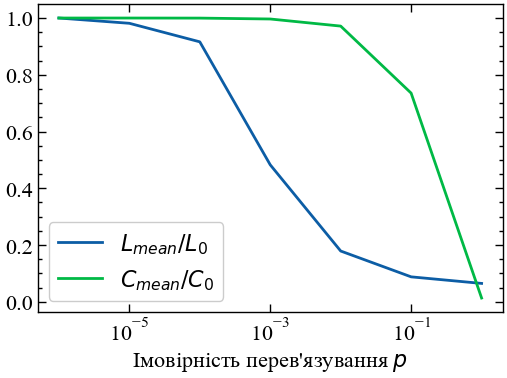

!pip install networkx13 Лабораторна робота № 13
Тема. Найпростіші мережі та мережні міри складності.
Мета. Навчитися використовувати елементи теорії графів для отримання спектральний і топологічних мір складності.
13.1 Теоретичні відомості
Для сучасних складних систем характерна нерегулярність зв’язків і висока чисельність елементів, яка може досягати десятків і сотень тисяч. Таким системам та їх мережним моделям, які володіють нетривіальними топологічними властивостями, найбільше відповідає термін “комплексні”. Комплексною мережею вважається система, яка
- складається з великої кількості компонентів;
- допускає “далекосяжні” зв’язки між компонентами;
- володіє великомасштабною (у тому числі просторово-часовою) мінливістю.
Дана мережа є графом з досить великою кількістю вузлів різної природи, що характеризуються багатовимірним кортежем ознак і динамічно мінливими зв’язками; розподіл ознак вузлів і характеристик зв’язків може бути описаний ймовірнісною моделлю (багатомірним розподілом).
Основною причиною підвищення актуальності розробок у області теорії і практики комплексних мереж є результати сучасних досліджень реальних комп’ютерних, біологічних і соціальних мереж. Властивості багатьох реальних мереж істотно відрізняються від властивостей класичних випадкових графів з рівноймовірними зв’язками між вузлами, які донедавна розглядалися в якості їх базисного математичного модельного прототипу, і тому побудову їх моделей було запропоновано здійснювати з використанням зв’язних структур і степеневих розподілів.
У теорії комплексних мереж виділяють три основні напрямки:
- дослідження статистичних властивостей, які характеризують поведінку мереж;
- створення моделей мереж;
- прогнозування поведінки при зміні структурних властивостей мереж.
Комплексні мережі використовуються для моделювання об’єктів і систем, дослідження яких іншими способами (за допомогою спостереження або активного експерименту) недоцільні або неможливі. Комп’ютерні мережі відносяться до мереж, які постійно ростуть і розвиваються. Серед факторів, що впливають на зростання мережі в першу чергу необхідно відзначити розмір або протяжність локальної мережі, яка визначається відстанню між найвіддаленішими станціями, при якій в нормальному режимі роботи вузлів чітко розпізнаються колізії, і кількість об’єднаних у мережу комп’ютерів. Для Інтернет-мереж цей розмір називається діаметром мережі і складає приблизно 1 км відстані, що дозволяє отримати високу швидкість зв’язку та максимально можливий рівень сервісу. При зростанні мережі збільшується кількість колізій, різко падає її корисна пропускна здатність і швидкодія передавання сигналу. Обмеження мережі за довжиною є передумовою вибору структури мережі, розбиття її на окремі частини (сегменти), появи додаткових серверів з новою мережею зв’язків, проблеми генеруються в контексті технологій так званої “останньої милі”. Спостерігається динаміка зростання мережі, своєрідна кластеризація, сервери виступають центрами утворених кластерів, відбувається просторове позиціонування компонент мережі у вигляді чітких ієрархічних структур.
Мережа розглядається як множина сегментів, кожен з яких закінчується точкою розгалуження або кінцевої вершиною мережі. Вершинами мережі є сервери, комутатори й кінцеві користувачі, загальну кількість яких позначимо \(N\). Локальні комп’ютерні мережі є об’єктними прототипами графових структур і тому для їх дослідження застосовують методи теорії графів.
Моделювання мереж із використанням апарата теорії графів є важливим напрямком досліджень дискретної математики. В останні роки зросла зацікавленість дослідників до складних мереж з великою кількістю вузлів, зокрема до комп’ютерних мереж, структура яких нерегулярна, складна і динамічно розвивається в часі. Для таких мереж доводиться генерувати стохастичні графи з величезною кількістю вершин.
У загальному вигляді модель комп’ютерної мережі являє собою випадковий граф, закон взаєморозміщення ребер і вершин для якого задається розподілом ймовірностей.
У даний час найпоширенішими є два основних підходи до моделювання складних мереж:
- випадкові пуассонівські графи та узагальнені випадкові графи;
- модель “тісного світу” Воттса і Строгаца [1] та її узагальнення, еволюційна модель зростання мережі Барабаші й Альберт [2,3].
Перший передбачає генерацію випадкового графа із заздалегідь відомою кількістю вершин і заданими ймовірнісними властивостями. Його ще називають графом Ердеша-Реньї зі сталою кількістю вершин \(N\). Розподіл ступенів вузлів \(k\) для цього графа визначається формулою Пуассона \(P(k) = \exp^{-\left\langle k \right\rangle} \left\langle k \right\rangle^k / k!\). Побудова графа здійснюється генеруванням, коли до \(N\) відокремлених вершин послідовно додаються ребра, що з’єднують випадковим чином довільні пари вершин. Початково граф складається із сукупності малих вершин, які в процесі генерування з часом розростаються до гігантського кластера зв’язаних між собою вершин, число яких є скінченною частиною загальної кількості \(N\). При генерації постійно зростає ймовірність зв’язування вершин, яка досягає з часом деякого критичного значення. В результаті процесу, який має характер фазового переходу, граф спонтанно розростається до гігантського кластера вершин, пов’язаних між собою, що нагадує конденсацію краплі води в перенасиченій парі.
Модель Воттса-Строгаца є комп’ютерною моделлю тісного світу. Її побудова зводиться до наступного: розглядається одновимірний, замкнений у кільце, періодичний ланцюг, який складається із \(N\) вершин. Спочатку кожну вершину з’єднують з іншими сусідніми, які знаходяться від неї на відстані, не більшій за \(k\), а потім кожне ребро з певною ймовірністю \(m\) перез’єднується з довільною вершиною, що призводить до трансформації регулярного ланцюга у граф тісного світу (Рис. 13.1). Оскільки в цій моделі кількість ребер є сталою, а ймовірності реалізації графів — різні, то вона зводиться до канонічного ансамблю графів і описує реально існуючі мережі, топологія яких не є ані цілком регулярною, ані цілком випадковою.

Більшість реальних графів підпорядковуються степеневому закону розподілу \(P(k)\). Ці графи побудови мереж описуються моделлю переважного приєднання Барабаші-Альберт. Через далекосяжні взаємодії у системи не існує масштабу зміни характерних величин. Ріст і переважне приєднання є основними механізмами побудови безмасштабних (масштабно-інваріантних) мереж.
Нехай вузол \(i\) має \(k_i\) зв’язків і він може бути приєднаним (зв’язаним) до інших вузлів \(k_i\). Ймовірність приєднання нового вузла до вузла \(i\) залежить від ступеня \(k_i\) вузла \(i\). Величину \(W(k_i) = k_i/\sum_{j}k_j\) називають переважним приєднанням (preferential attachment). Не всі вузли мають однакову кількість зв’язків, тому вони характеризуються функцією розподілу \(P(k)\), що визначає ймовірність того, що випадково вибраний вузол має \(k\) зв’язків. Для складних мереж функція \(P(k)\) відрізняється від розподілу Пуассона для випадкових графів. Для переважної більшості складних мереж спостерігається степенева залежність \(P(k)\propto k^{-\gamma}\).
Покажемо, яким чином у межах єдиного алгоритму розрахувати і проаналізувати основні спектральні і топологічні властивості найпростіших графів. Для аналізу мережі досліджують характеристики окремих вузлів (локальні), характеристики мережі в цілому (глобальні) та характеристики мережних підструктур. Числові показники деяких глобальних характеристик мережі можуть бути представлені у вигляді аналітичних узагальнень її локальних характеристик (наприклад — найменше, найбільше, середнє значення локального показника, взяте по всім вузлам). Окрім того, що глобальна характеристика може бути представлена у формі одного числа, це також може бути представлення у вигляді розподілу значень локальної характеристики вузлів по всій мережі.
Примітка
Частина представлених у даній лабораторній ілюстрацій була зроблена із використанням наступної книги [4]. Також у відкритому доступі наявні вихідні коди програм даної книги: https://github.com/PacktPublishing/Network-Science-with-Python-and-NetworkX-Quick-Start-Guide
13.1.1 NetworkX
Для аналізу складних мереж і їх спектральних і топологічних характеристик можна скористатися бібліотекою NetworkX.
NetworkX дозволяє моделювати, аналізувати та візуалізувати мережі різної природи та складності. Пакет надає класи для представлення декількох типів мереж та реалізацію багатьох алгоритмів, що використовуються в мережній науці. NetworkX відносно простий у встановленні та використанні і має багато вбудованих функцій, тому він ідеально підходить для аналізу мереж різної природи та складності.
NetworkX є безкоштовним програмним забезпеченням з відкритим вихідним кодом. Це означає, що вихідний код доступний для читання, модифікації та розповсюдження (за певних умов). Сам код доступний за адресою https://github.com/networkx/networkx.
13.1.1.1 Встановлюємо NetworkX
Для встановлення даної бібліотеки можна скористатися командою:
Далі можемо імпортувати відповідні бібліотеки:
import networkx as nx
import matplotlib.pyplot as plt # для візуалізації графіків
import numpy as np # для роботи з матрицями
%matplotlib inlineПам’ятайте, що оператори import знаходяться у верхній частині вашого коду, вказуючи Python завантажити зовнішній модуль. У цьому випадку ми хочемо завантажити NetworkX, але дамо йому короткий псевдонім nx, оскільки нам доведеться вводити його неодноразово, звідси й інструкція as.
Давайте перевіримо встановлену версію NetworkX. Ми хочемо переконатися, що не використовуємо застарілий пакет.
nx.__version__'3.1'Далі виконаємо налаштування формату виведення рисунків:
plt.style.use(['science', 'notebook', 'grid']) # стиль, що використовуватиметься
# для виведення рисунків
size = 16
params = {
'figure.figsize': (8, 6), # встановлюємо ширину та висоту рисунків за замовчуванням
'font.size': size, # розмір фонтів рисунку
'lines.linewidth': 2, # товщина ліній
'axes.titlesize': 'small', # розмір титулки над рисунком
'axes.labelsize': size, # розмір підписів по осям
'legend.fontsize': size, # розмір легенди
'xtick.labelsize': size, # розмір розмітки по осі Ох
'ytick.labelsize': size, # розмір розмітки по осі Ох
"font.family": "Serif", # сімейство стилів підписів
"font.serif": ["Times New Roman"], # стиль підпису
'savefig.dpi': 300, # якість збережених зображень
'axes.grid': False # побудова сітки на самому рисунку
}
plt.rcParams.update(params) # оновлення стилю згідно налаштувань13.1.2 Типи мереж
Почнемо з простих мереж, представлених у NetworkxX класом Graph.
13.1.2.1 Простий граф (ненаправлений та незважений)
# "звичайний" граф є неорієнтованим
G = nx.Graph()
# дайте кожній вершині "ім'я", яке у цьому випадку є літерою.
G.add_node('a')
# метод add_nodes_from дозволяє додавати вузли з послідовності, у цьому випадку зі списку
nodes_to_add = ['b', 'c', 'd']
G.add_nodes_from(nodes_to_add)
# додаємо ребро з 'a' в 'b'
# оскільки граф неорієнтовний, то порядок не має значення
G.add_edge('a', 'b')
# так само як і add_nodes_from, ми можемо додавати ребра з послідовності
# ребра повинні бути задані як 2-кортежі
edges_to_add = [('a', 'c'), ('b', 'c'), ('c', 'd')]
G.add_edges_from(edges_to_add)
# будуємо граф
plt.figure(figsize=(6, 4))
nx.draw_networkx(G, with_labels=True)
Існує багато необов’язкових аргументів для функції draw_network(), щоб налаштувати зовнішній вигляд.
plt.figure(figsize=(6, 4))
nx.draw_networkx(G,
with_labels=True,
node_color='blue',
node_size=1600,
font_color='white',
font_size=16,
)
13.1.2.2 Зважена мережа
Повертаючись до випадку неорієнтованих мереж, іноді не всі ребра є рівними. Наприклад, у мережі, що представляє міську систему водопостачання, ребра можуть представляти серію труб, якими вода транспортується з одного місця в інше. Деякі з них можуть мати більшу пропускну здатність, ніж інші. Коли вершини графа можуть мати різну силу зв’язності, мережа називається зваженою, а зв’язність кількісно вимірюється числом, яке називається вагою. Зваженими можуть бути як орієнтовані, так і неорієнтовані мережі. При візуалізації мережі вагу ребер часто вказують, змінюючи товщину або непрозорість ребра. Ваги ребер можна використовувати для представлення різних типів атрибутів.
plt.figure(figsize=(6, 4))
# зважена мережа
G_weighted = nx.Graph()
G_weighted.add_edge("A","B",weight=6)
G_weighted.add_edge("A","D",weight=3)
G_weighted.add_edge("A","C",weight=0.5)
G_weighted.add_edge("B","D",weight=1)
nx.draw_networkx(G_weighted, with_labels=True)
13.1.2.3 Направлений граф
Іноді буває корисно додавати трохи більше деталей до мережі. Ребра, які ми бачили попередньо, не враховують звідки одна вершина прямує або куди. Вони просто з’єднують два вузли, тому їх називають симетричними або неорієнтованими.
Уявіть собі мережу, яка являє собою систему доріг (ребер) і перехресть (вузлів). A мережа з ненаправленими ребрами була б гарним представленням, доки ви не натрапили на вулицю з одностороннім рухом. Ненаправлене ребро припускає, що ви можете рухатися в будь-якому напрямку однаково. Хоча в реальності напрям руху по дорожній смузі матиме значення навіть для вашого життя.
Коли напрямок має значення, мережа називається орієнтованою (направленою). У направленій мережі кожне ребро має вузол-джерело і вузол-приймач. Як правило, ребро представляє якийсь потік, наприклад, трафік, від джерела до цілі. Але що, якщо не всі з’єднання є односторонніми? Двосторонні з’єднання створюються шляхом поєднання двох спрямованих ребер, що йдуть в протилежних напрямках. У спрямованих мережах ребра зображуються стрілками, що вказують на ціль.
plt.figure(figsize=(6, 4))
# направлений граф
G_di = nx.DiGraph()
G_di.add_edge("A","B",weight=1)
G_di.add_edge("A","D",weight=3)
G_di.add_edge("A","C",weight=1)
G_di.add_edge("B","D",weight=2)
# створити словник позицій для вузлів
pos = nx.spring_layout(G_di)
# будуємо граф
nx.draw_networkx_nodes(G_di, pos)
nx.draw_networkx_edges(G_di, pos)
nx.draw_networkx_labels(G_di, pos)
# створити словник міток ребер
edge_labels = {(u, v): d['weight'] for u, v, d in G_di.edges(data=True)}
# створення міток для ребер
nx.draw_networkx_edge_labels(G_di, pos, edge_labels=edge_labels);
Об’єкт граф має деякі властивості та методи, які надають дані про весь граф.
# Cписок усіх вузлів
G_di.nodes()NodeView(('A', 'B', 'D', 'C'))# Список усіх ребер
G_di.edges()OutEdgeView([('A', 'B'), ('A', 'D'), ('A', 'C'), ('B', 'D')])G_di.edges(data=True) # триплет зі словником (третім йде вага ребра)OutEdgeDataView([('A', 'B', {'weight': 1}), ('A', 'D', {'weight': 3}), ('A', 'C', {'weight': 1}), ('B', 'D', {'weight': 2})])G_di.edges["A","B"] # виводимо вагу, вказуючи цікаві для нас вузли напряму. У результаті отримуємо словник{'weight': 1}G_di.edges["A","C"]["weight"] # виводимо вагу, вказуючи цікаві для нас вузли напряму. У результаті отримуємо скаляр1pos # виводимо словник координат розташувань вузлів на графіку{'A': array([ 0.0080052 , -0.05428409]),
'B': array([ 0.3455655 , -0.29243526]),
'D': array([ 0.43837117, -0.65328066]),
'C': array([-0.79194188, 1. ])}Об’єкти NodeView та EdgeView мають ітератори, тому ми можемо використовувати їх у циклах for:
for node in G_di.nodes:
print(node)A
B
D
Cfor edge in G_di.edges:
print(edge)('A', 'B')
('A', 'D')
('A', 'C')
('B', 'D')Зверніть увагу, що ребра подано у вигляді 2-кортежів, так само, як ми їх ввели.
Ми можемо отримати кількість вершин та ребер у графі за допомогою методів number_of_.
G_di.number_of_nodes()4G_di.number_of_edges()4Деякі методи роботи з графами приймають ребро або вершину як аргумент. Вони надають властивості графа для даного ребра або вершини. Наприклад, метод .neighbors() повертає вершини, пов’язані з даною вершиною:
# список сусідів вершини 'A'
G_di.neighbors('A')<dict_keyiterator at 0x2327b03fce0>З міркувань продуктивності багато методів для роботи з графами повертають ітератори замість списків. Їх зручно використовувати у циклах:
for neighbor in G_di.neighbors('A'):
print(neighbor)B
D
CІ ви завжди можете використати конструктор list для створення списку з ітератора:
list(G_di.neighbors('A'))['B', 'D', 'C']Зверніть увагу на асиметрію в методах роботи з ребрами, таких як has_edge():
G_di.has_edge('A', 'B')TrueG_di.has_edge('B', 'A')FalseЗамість симетричного зв’язку “сусіди”, вузли в орієнтованих графах мають попередників (successors або “in-neighbours”) і наступників (predecessors або “out-neighbours”):
print('Попередники вершини B:', list(G_di.successors('B')))
print('Наступники вершини B:', list(G_di.predecessors('B')))Попередники вершини B: ['D']
Наступники вершини B: ['A']Спрямовані графи мають вхідні ступені вершини (in-degree) та вихідні ступені вершини (out-degree), які показують кількість ребер, що ведуть до та від даної вершини, відповідно:
G_di.in_degree('A') # у вершину А не входить жодна вершина (шлях)0G_di.out_degree('A') # з вершини А виходять 3 вершини (шляхи)3У NetworkX існує декілька алгоритмів компонування, які можуть бути використані для розміщення вузлів графа при візуалізації, в тому числі
nx.spring_layout(): цей алгоритм використовує примусовий підхід до розміщення вершин. Вузли, які з’єднані ребрами, притягуються один до одного, тоді як вузли, які не з’єднані, відштовхуються. Алгоритм намагається мінімізувати енергію системи, регулюючи положення вузлів.nx.circular_layout(): алгоритм розміщує вузли рівномірно по колу.nx.spectral_layout(): даний алгоритм використовує власні вектори матриці суміжності графа для розміщення вершин. Власні вектори використовуються для проектування вершин у простір нижчої розмірності, а положення вершин потім визначаються шляхом оптимізації функції вартості.nx.random_layout(): вершини розміщуються випадковим чином у заданій обмежувальній області.nx.shell_layout(): алгоритм фіксує вершини у вигляді концентричних кіл або оболонок, причому вершини в одній і тій же оболонці мають однакову відстань до центру.nx.kamada_kawai_layout(): використовується ітераційний оптимізаційний підхід для розміщення вузлів. Алгоритм намагається мінімізувати навантаження на систему, змінюючи положення вузлів.nx.fruchterman_reingold_layout(): варіація алгоритмуnx.spring_layout(), і використання силового підходу до розміщення вузлів.
Кожен алгоритм компонування має свої сильні та слабкі сторони, і вибір найкращого з них залежить від характеристик графа та цілей візуалізації.
13.1.2.4 Знакова мережа
Signed_G = nx.Graph()
# додаємо ребра
Signed_G.add_edge("A","B",sign="*")
Signed_G.add_edge("A","C",sign="-")
Signed_G.add_edge("A","d",sign="+")
# вибір алгоритму компонування
pos = nx.random_layout(Signed_G)
# створити словник кольорів ребер на основі знаку кожного ребра
edge_colors = {'+': 'green', '-': 'red', "*":"black"}
colors = [edge_colors[Signed_G[u][v]['sign']] for u, v in Signed_G.edges()]
# створити словник стилів ребер на основі знаку кожного ребра
edge_styles = {'+': 'solid', '-': 'dashed', "*":"dashed"}
styles = [edge_styles[Signed_G[u][v]['sign']] for u, v in Signed_G.edges()]
plt.figure(figsize=(6, 4))
# будуємо граф з кольоровими та стилізованими ребрами
nx.draw_networkx_nodes(Signed_G, pos, node_color='blue')
nx.draw_networkx_edges(Signed_G, pos, edge_color=colors, style=styles)
nx.draw_networkx_labels(Signed_G, pos);C:\Users\Andrii\AppData\Local\Temp\ipykernel_13844\974620191.py:26: DeprecationWarning: `alltrue` is deprecated as of NumPy 1.25.0, and will be removed in NumPy 2.0. Please use `all` instead.
nx.draw_networkx_edges(Signed_G, pos, edge_color=colors, style=styles)
13.1.2.5 Мультиграф
Мультиграф — це тип графа в NetworkX, який допускає декілька ребер між парою вузлів. Іншими словами, MultiGraph може мати паралельні ребра, в той час як стандартний Graph може мати лише одне ребро між будь-якою парою вузлів. Мультиграф — це мережа, в якій декілька ребер можуть з’єднувати одні й ті ж вузли.
Multi_G = nx.MultiGraph()
Multi_G.add_edge("A","B",relation="family",weight=1)
Multi_G.add_edge("A","C",relation="family",weight=2)
Multi_G.add_edge("A","B",relation="Work",weight=3)
Multi_G.add_edge("D","B",relation="Work",weight=1)
Multi_G.add_edge("B","E",relation="Friend",weight=2)
plt.figure(figsize=(6, 4))
nx.draw_networkx(Multi_G, with_labels=True);
plt.figure(figsize=(6, 4))
# компонуємо
pos = nx.spring_layout(Multi_G)
# будуємо вузли
nx.draw_networkx_nodes(Multi_G, pos, node_color='lightblue', node_size=500)
# будуємо ребра
edge_labels = {}
for u, v, d in Multi_G.edges(data=True):
if (u, v) in edge_labels:
edge_labels[(u, v)] += "\n" + d["relation"] + ": " + str(d["weight"])
else:
edge_labels[(u, v)] = d["relation"] + ": " + str(d["weight"])
nx.draw_networkx_edge_labels(Multi_G, pos, edge_labels=edge_labels)
nx.draw_networkx_edges(Multi_G, pos, width=1, alpha=0.7)
# будуємо мітки
nx.draw_networkx_labels(Multi_G, pos, font_size=10, font_family="sans-serif");
# ребра
list(Multi_G.edges())[('A', 'B'), ('A', 'B'), ('A', 'C'), ('B', 'D'), ('B', 'E')]# G.edges(data=True)
list(Multi_G.edges(data=True))[('A', 'B', {'relation': 'family', 'weight': 1}),
('A', 'B', {'relation': 'Work', 'weight': 3}),
('A', 'C', {'relation': 'family', 'weight': 2}),
('B', 'D', {'relation': 'Work', 'weight': 1}),
('B', 'E', {'relation': 'Friend', 'weight': 2})]# конкретно перелічуючи ребра
list(Multi_G.edges(data="relation"))[('A', 'B', 'family'),
('A', 'B', 'Work'),
('A', 'C', 'family'),
('B', 'D', 'Work'),
('B', 'E', 'Friend')]# певне ребро
Multi_G.edges["A","B"] # помилкаValueError: not enough values to unpack (expected 3, got 2)#натомість
# атрибути в мультиграфі
dict(Multi_G["A"]["B"]){0: {'relation': 'family', 'weight': 1}, 1: {'relation': 'Work', 'weight': 3}}list(Multi_G.edges("B"))[('B', 'A'), ('B', 'A'), ('B', 'D'), ('B', 'E')]Multi_G["A"]["B"][0]["relation"]'family'13.1.2.6 Двочастковий (bipartite) граф
Двочастковий граф — це тип графа, в якому вершини можна розбити на дві непересічні множини так, що всі ребра з’єднують вершину з однієї множини з вершиною в іншій множині. Тобто, не існує ребер, які з’єднують вершини всередині однієї множини.
Двочасткові графи корисні для моделювання відносин між двома різними типами об’єктів, наприклад, покупцями і продавцями на ринку, або акторами і фільмами в кіноіндустрії.
У NetworkX ви можете створювати і маніпулювати двосторонніми графами за допомогою модуля bipartite, який надає різні функції і алгоритми для двосторонніх графів. Крім того, існує декілька методів візуалізації, які можна використовувати для відображення двосторонніх графів, наприклад, двосторонній макет, який розташовує вузли у два окремі рядки.
Приклад акціонерів та акцій:
from networkx.algorithms import bipartite
# список акціонерів
stockholders = ['Alice', 'Bob', 'Charlie', 'David', 'Eve', 'Frank', 'Grace', 'Harry', 'Ivy', 'John']
# перелік акцій
stocks = ['AAPL', 'GOOG', 'TSLA', 'AMZN', 'FB', 'MSFT', 'NVDA', 'PYPL', 'NFLX', 'TWTR']
# створити двочастковий граф
B = nx.Graph()
# додавання вузлів зі списку
B.add_nodes_from(stockholders, bipartite=0)
B.add_nodes_from(stocks, bipartite=1)
# додавання ребер випадковим чином
import random
while not nx.is_connected(B):
B.add_edge(random.choice(stockholders), random.choice(stocks))
plt.figure(figsize=(8, 6))
# будуємо двочастковий граф
pos = nx.bipartite_layout(B, stockholders)
nx.draw_networkx(B, pos, with_labels=True)
# 2 набори двочасткових графів
bipartite.sets(B)({'Alice',
'Bob',
'Charlie',
'David',
'Eve',
'Frank',
'Grace',
'Harry',
'Ivy',
'John'},
{'AAPL',
'AMZN',
'FB',
'GOOG',
'MSFT',
'NFLX',
'NVDA',
'PYPL',
'TSLA',
'TWTR'})Хоча двочасткові графи корисні для представлення повної структури зв’язків “багато-до-багатьох”, іноді простіше працювати зі стандартними односторонніми мережами. Це може бути у випадку, якщо аналіз фокусується на певному типі вузлів, або якщо необхідна методика доступна лише для односторонніх (одномодальних) мереж, або ж методика доступна лише для одномодових мереж, чи мережа зв’язків має занадто багато вузлів для чіткої візуалізації. На щастя, можна створити одномодові мережі з мережі зв’язків за допомогою процесу, який називається “проєкція”.
Одномодові мережі, побудовані з мереж зв’язків, називаються мережами спільної приналежності, тому що вузли з’єднуються ребрами, якщо вони мають спільні зв’язки. Існує кілька типів проекцій, які використовуються для створення спільної приналежності, але всі вони обертаються навколо однієї і тієї ж ідеї: з’єднання вузлів зі спільним сусідом у вихідній мережі приналежності. Найпростіша можлива проекція — це незважена проекція, яка створює незважене ребро між вузлами з одним або декількома спільними сусідами. Наступний код використовує функцію projected_graph() для проектування мережі акціонерів, що мають спільні акції компаній:
# Лівобічний граф (акціонери)
# акціонери, які мають спільні акції, пов'язані між собою
# Лівобічний граф
plt.figure(figsize=(6, 4))
P = bipartite.projected_graph(B, bipartite.sets(B)[0])
nx.draw_networkx(P, with_labels=True, node_size=10)
У такий самий спосіб ми можемо побудувати мережу акцій:
# Правобічний граф
plt.figure(figsize=(6, 4))
P = bipartite.projected_graph(B,bipartite.sets(B)[1])
nx.draw_networkx(P, with_labels=True, node_size=10)
# Зважений лівобічний граф
# як багато спільного
plt.figure(figsize=(6, 4))
# краща візуалізація
P = bipartite.weighted_projected_graph(B,bipartite.sets(B)[0])
pos = nx.circular_layout(P)
# будуємо граф
nx.draw_networkx_nodes(P, pos)
nx.draw_networkx_edges(P, pos)
nx.draw_networkx_labels(P, pos)
# створюємо словник міток ребер
edge_labels = {(u, v): d['weight'] for u, v, d in P.edges(data=True)}
# будуємо мітки для ребер
nx.draw_networkx_edge_labels(P, pos, edge_labels=edge_labels);
13.1.3 Імпортуємо інформацію про мережу
13.1.3.1 Імпортуємо дані з file.txt та GEXF
Щоб імпортувати інформацію про мережу до NetworkX, ви можете скористатися однією з декількох функцій, залежно від формату ваших даних. Ось кілька прикладів:
- Імпорт з файлу списку граней:
Припустимо, у вас є файл списку граней, що мають наступне представлення:
A B
A C
B D
C D
D EВи можете імпортувати цей файл у граф NetworkX функцією read_edgelist():
G = nx.read_edgelist('databases\lab_13\Sample1.txt')
plt.figure(figsize=(6, 4))
nx.draw_networkx(G, with_labels=True)
read_edgelist()
- Імпорт з файлу матриці суміжності:
Припустимо, що у вас є файл матриці суміжності:
0 1 1 0 0
1 0 0 1 0
1 0 0 1 1
0 1 1 0 1
0 0 1 1 0Ви можете імпортувати цей файл у граф NetworkX за допомогою функції from_numpy_array():
adj_matrix = np.loadtxt('databases\lab_13\Sample2.txt')
G = nx.from_numpy_array(adj_matrix)
plt.figure(figsize=(6, 4))
nx.draw_networkx(G, with_labels=True)
numpy за допомогою функції from_numpy_array()
- Імпорт з файлу GEXF:
Якщо у вас є файл мережі у форматі GEXF, який є популярним форматом для обміну даних про графи між різними програмними пакетами, ви можете імпортувати його у граф NetworkX за допомогою функції read_gexf:
Простий граф у форматі GEXF:
<?xml version="1.0" encoding="UTF-8"?>
<gexf xmlns="http://www.gexf.net/1.3" version="1.3">
<meta lastmodifieddate="2022-10-01">
<creator>NetworkX</creator>
<description>An example graph in GEXF format</description>
</meta>
<graph mode="static" defaultedgetype="undirected">
<nodes>
<node id="0" label="Node 0"/>
<node id="1" label="Node 1"/>
<node id="2" label="Node 2"/>
</nodes>
<edges>
<edge id="0" source="0" target="1"/>
<edge id="1" source="1" target="2"/>
<edge id="2" source="2" target="0"/>
</edges>
</graph>
</gexf>G = nx.read_gexf('databases\lab_13\\basic.gexf')
plt.figure(figsize=(6, 4))
nx.draw_networkx(G, with_labels=True)
.gexf за допомогою функції read_gexf()
# Зберігаємо граф у форматі GEXF
nx.write_gexf(G, 'databases\lab_13\Sample3.gexf')13.1.3.2 Матриця суміжності
G_mat = np.array([[0, 1, 1, 1, 0, 1, 0, 0, 0, 0],
[1, 0, 0, 1, 0, 0, 1, 0, 0, 0],
[1, 0, 0, 0, 0, 0, 0, 0, 0, 0],
[1, 1, 0, 0, 1, 0, 0, 0, 0, 0],
[0, 0, 0, 1, 0, 1, 0, 1, 0, 0],
[1, 0, 0, 0, 1, 0, 0, 0, 1, 0],
[0, 1, 0, 0, 0, 0, 0, 0, 0, 0],
[0, 0, 0, 0, 1, 0, 0, 0, 0, 0],
[0, 0, 0, 0, 0, 1, 0, 0, 0, 1],
[0, 0, 0, 0, 0, 0, 0, 0, 1, 0]])
G_matarray([[0, 1, 1, 1, 0, 1, 0, 0, 0, 0],
[1, 0, 0, 1, 0, 0, 1, 0, 0, 0],
[1, 0, 0, 0, 0, 0, 0, 0, 0, 0],
[1, 1, 0, 0, 1, 0, 0, 0, 0, 0],
[0, 0, 0, 1, 0, 1, 0, 1, 0, 0],
[1, 0, 0, 0, 1, 0, 0, 0, 1, 0],
[0, 1, 0, 0, 0, 0, 0, 0, 0, 0],
[0, 0, 0, 0, 1, 0, 0, 0, 0, 0],
[0, 0, 0, 0, 0, 1, 0, 0, 0, 1],
[0, 0, 0, 0, 0, 0, 0, 0, 1, 0]])Перетворення матриці суміжності у граф за допомогою nx.Graph:
G = nx.Graph(G_mat)
plt.figure(figsize=(6, 4))
nx.draw_networkx(G)
13.1.4 Графостатистичні показники
13.1.4.1 Ступінь вершини
Незалежно від того, чи представляють вузли людей, місця, комп’ютери або атоми, розташування вузла в структурі мережі тісно пов’язане з роллю, яку він відіграє в загальній системі. Різні структури уможливлюють різні ролі. Отже, кількісно оцінюючи структурні властивості вузла, можна зрозуміти роль, яку відіграє цей вузол. Числові міри, які характеризують мережеві властивості вузла, називаються мірами центральності. Однією з найпростіших мір центральності є ступенева центральність (degree centrality). Ступенева центральність вузла — це просто кількість сусідів, які наявні у вузла. У соціальній мережі ступенева центральність є мірою популярності, і може бути хорошим способом здогадатися, хто влаштовує найкращі вечірки, хто має найбільшу кількість публікацій або хто є монополістом на ринку праці. Ступенева центральність — це досить елементарний приклад, але далі будуть представлені більш складні міри, які часто використовуються в науці складних мереж. Кожна міра центральності кількісно оцінює різний тип важливості і може бути корисною для відповідей на різні типи питань.
Показник ступеневої центральності тісно пов’язаний із такою мірою як ступінь вершини в мережі (node degree), яка визначає кількість ребер, з якими з’єднана конкретна досліджувана вершина. У мережі з \(N\) вершин і \(M\) ребер, ступінь \(k_i\) вершини \(i\) визначається як
\[ k_i = \sum_{j=1}^M A_{ij}. \]
\(A\) — матриця суміжності мережі, \(A_{ij} = 1\), якщо існує ребро, що з’єднує вершини \(i\) та \(j\), і \(A_{ij} = 0\) в іншому випадку.
Околицею вершини \(i\) називається множина вершин, які безпосередньо з’єднані з \(i\)-им ребром. Околиця \(i\) позначається як \(N_i\) і визначається як
\[ N_i = \{j \mid A_{ij} = 1\}. \]
Тут \(A\) — матриця суміжності мережі; \(A_{ij} = 1\), якщо існує ребро, що з’єднує вершини \(i\) та \(j\), і \(A_{ij} = 0\) в іншому випадку.
Розглянемо приклад ступеню вершини на прикладі графа карате-клубу.
Відомості про граф карате-клубу
Граф карате-клубу — це соціальна мережа, що представляє дружбу між 34 членами карате-клубу, як це спостерігав Вейн В. Захарі у 1977 році. Кожна вершина графа представляє члена клубу, а кожне ребро — дружбу між двома членами. Граф має 34 вершини та 78 ребер. Карате-клуб є відомим прикладом аналізу соціальних мереж і використовувався для вивчення різних властивостей мережі, таких як структура спільноти і міра центральності. Граф характеризується розколом клубу на дві фракції, очолювані інструкторами клубів: вершина 1 та вершина 34. Цей розкол був спричинений суперечкою між двома лідерами, яка врешті-решт призвела до утворення двох окремих клубів карате
G_karate = nx.karate_club_graph()plt.figure(figsize=(6, 4))
nx.draw_networkx(G_karate)
node = 2
neighborhood = list(nx.neighbors(G_karate, node))
neighborhood[0, 1, 3, 7, 8, 9, 13, 27, 28, 32]# ступінь = кількість сусідів
len(neighborhood)10# ступінь вершини
G_karate.degree(node)10# Усі ступені вершини
dict(G_karate.degree){0: 16,
1: 9,
2: 10,
3: 6,
4: 3,
5: 4,
6: 4,
7: 4,
8: 5,
9: 2,
10: 3,
11: 1,
12: 2,
13: 5,
14: 2,
15: 2,
16: 2,
17: 2,
18: 2,
19: 3,
20: 2,
21: 2,
22: 2,
23: 5,
24: 3,
25: 3,
26: 2,
27: 4,
28: 3,
29: 4,
30: 4,
31: 6,
32: 12,
33: 17}plt.figure(figsize=(6, 4))
plt.hist(sorted(dict(G_karate.degree).values()))
plt.xlabel("Ступінь вершини")
plt.ylabel("Частота")
На Рис. 13.18 видно, що в мережі карате-клубів наявно достатньо багато учасників клубу, хто має один або декілька зв’язків із іншими членами клубу. Також видно, що серед них є ті, хто має більше 15 знайомих. Представниками з такою кількістю зв’язків можуть бути лідери цих клубів.
13.1.4.2 Тріадичне закриття
Міра, представлена в цьому розділі, стосується зв’язків між сусідами вузла, а не самого вузла. Часто буває корисно розглянути, чи мають сусіди вузла тенденцію бути пов’язаними один з одним. У соціальній мережі це питання зводиться до того, щоб запитати, чи товариш вашого товариша є і вашим товаришем одночасно. Ця властивість відома як транзитивність (transitivity). Результатом таких стосунків є трикутники: три вузли, пов’язані між собою. Тенденція до виникнення таких трикутників називається кластеризацією (clustering). Сильна кластеризація часто свідчить про надійність і надлишковість мережі — якщо один ребро зникає, шлях все ще існує через два інших. Кластеризація вимірюється за допомогою коефіцієнта локальної кластеризації (local clustering coefficient), який визначає тенденцію вузлів об’єднуватись у тріади. Глобальний коефіцієнт кластеризації (global clustering coefficient) представляє середнє значення по всім локальним кластеризаціям, що були визначені для кожного вузла мережі.
13.1.4.2.1 Коефіцієнт кластеризації
Коефіцієнт кластеризації вершини \(i\) задається формулою:
\[ C_i = \sum_{j,k}A_{ij}A_{jk}A_{ki} \Big/ k_i(k_i - 1), \]
де \(k_i=\sum_{j}A_{ij}\) — кількість ребер, що входять у вершину \(i\); \(A\) позначає матрицю суміжності.
# локальна кластеризація
nx.clustering(G, 2)0# список кластеризацій
nx.clustering(G){0: 0.16666666666666666,
1: 0.3333333333333333,
2: 0,
3: 0.3333333333333333,
4: 0,
5: 0,
6: 0,
7: 0,
8: 0,
9: 0}13.1.4.2.2 Глобальний коефіцієнт кластеризації
Багато спостережуваних соціальних мереж є більш кластеризованими, ніж це могло б виникнути випадковим чином
Коефіцієнт кластеризації мережі є середнім значенням коефіцієнтів кластеризації всіх \(N\) вузлів:
\[ C = N^{-1}\sum_{i=1}^{N} C_i. \]
# середній ступінь кластеризації
nx.average_clustering(G)0.0833333333333333313.1.4.2.3 Транзитивність
Транзитивність — це властивість мережі, яка вимірює ймовірність того, що якщо два вузли мережі мають спільного сусіда, то вони також будуть безпосередньо з’єднані один з одним. Іншими словами, вона вимірює тенденцію до утворення “трикутників” у мережі.
Формально транзитивність мережі визначається як відношення кількості трикутників у мережі до кількості з’єднаних трійок вузлів (тобто трійок вузлів, які безпосередньо з’єднані один з одним або мають спільного сусіда). У математичній нотації транзитивність мережі позначається як
\[ T = \sum_{i,k,j=1}^{N}A_{ik}A_{kj}A_{ji} \Bigg/ \sum_{i,k,j=1}^{N}A_{ik}A_{ji}. \]
Висока транзитивність вказує на те, що вузли в мережі мають тенденцію до утворення трикутних кластерів або спільнот, тоді як низька транзитивність вказує на те, що мережа є більш випадковою або децентралізованою структурою. Транзитивність тісно пов’язана з поняттям коефіцієнта кластеризації, який вимірює схильність вузлів до утворення локальних кластерів або спільнот.
#транзитивність
#transitivity зважує вершини з великим ступенем вершини
nx.transitivity(G)0.1578947368421052513.1.4.3 Шлях
Шлях (path) між двома вузлами \(A\) та \(B\) у мережі — це послідовність вузлів \(A, X_1, X_2, ..., X_n, B\) та послідовність ребер \((A, X_1), (X_1, X_2), ..., (X_n, B)\), де кожен вузол та ребро у послідовності є суміжним з попереднім та наступним вузлом або ребром у послідовності.
Довжина шляху (path length) — це кількість ребер у ньому. Шлях довжиною 1 — це ребро між двома вершинами, шлях довжиною 2 — послідовність з двох ребер і трьох вершин, і так далі. Найкоротший шлях між двома вершинами — це шлях мінімальної довжини, який їх з’єднує.
# згенерувати усі прості шляхи між вершинами 1 та 3
paths = nx.all_simple_paths(G, source=1, target=3)
# перетворити генератор у список
Path_List = [path for path in paths]
print("Список шляхів:", Path_List)Список шляхів: [[1, 0, 3], [1, 0, 5, 4, 3], [1, 3]]Path1 = Path_List[0]
# перевірити, чи є шлях простим у графі
is_valid = nx.is_simple_path(G, Path1) # Простий шлях - це шлях, який не містить жодної вершини, що повторюється.
print("Чи є шлях простим?", is_valid)Чи є шлях простим? True# хибний приклад
nx.is_simple_path(G, [0,8,5])False# формуємо список ребер, що формують шлях
edge_list = [(Path1[i], Path1[i+1]) for i in range(len(Path1)-1)] # len(Path1)-1 = довжина шляху
edge_list[(1, 0), (0, 3)]# обчислюємо вагу шляху
weight = sum(G[u][v]['weight'] for u, v in edge_list if 'weight' in G[u][v])
print("Вага шляху:", weight)Вага шляху: 213.1.4.3.1 Геодезична лінія
Геодезичний шлях між двома вузлами \(A\) і \(B\) в мережі — це найкоротший шлях, який їх з’єднує. Іншими словами, це шлях з мінімальною кількістю ребер, які потрібно пройти, щоб дістатися з вузла \(A\) до вузла \(B\). Довжина геодезичного шляху — це кількість ребер у цьому шляху.
# геодезичний шлях = найкоротший шлях
nx.shortest_path(G, 1, 2)[1, 0, 2]# обчислити найкоротший шлях між двома вузлами
path = nx.shortest_path(G, source=1, target=3)
# обчислити відповідні ребра шляху
edges = [(path[i], path[i+1]) for i in range(len(path)-1)]
plt.figure(figsize=(6, 4))
# будуємо граф та шлях
pos = nx.circular_layout(G)
nx.draw_networkx(G, pos, with_labels=True)
nx.draw_networkx_edges(G, pos, edgelist=edges, edge_color='r', width=3);C:\Users\Andrii\AppData\Local\Temp\ipykernel_13844\481497461.py:15: DeprecationWarning: `alltrue` is deprecated as of NumPy 1.25.0, and will be removed in NumPy 2.0. Please use `all` instead.
nx.draw_networkx_edges(G, pos, edgelist=edges, edge_color='r', width=3);
# геодезична довжина
nx.shortest_path_length(G, 1, 2)2Пошук геодезичного шляху від вузла \(i\) до кожного іншого вузла є обчислювально складним, тому нам потрібен ефективний алгоритм для цього.
Тут ми використовуємо пошук у ширину [5]:
# алгоритм пошуку в ширину
T = nx.bfs_tree(G, 1)
plt.figure(figsize=(6, 4))
nx.draw_networkx(T, with_labels=True)
# усі найкоротші шляхи
nx.shortest_path_length(G, 1) # виводимо словник {1: 0, 0: 1, 3: 1, 6: 1, 2: 2, 5: 2, 4: 2, 8: 3, 7: 3, 9: 4}# середній найкоротший шлях
nx.average_shortest_path_length(G)2.413.1.4.3.2 Зв’язні компоненти
У простій мережі для кожної пари вершин можна знайти шлях, який їх з’єднує. Це і є визначенням зв’язного графа. Ми можемо перевірити цю властивість для заданого графа:
nx.is_connected(G)TrueНе кожен граф зв’язний:
G_test = nx.Graph()
nx.add_cycle(G_test, (1,2,3))
G_test.add_edge(4, 5)
plt.figure(figsize=(6, 4))
nx.draw_networkx(G_test, with_labels=True)
nx.is_connected(G_test)FalseА NetworkX видасть помилку, якщо ви запитаєте шлях між вузлами, якого не існує:
nx.has_path(G_test, 3, 5)Falsenx.shortest_path(G_test, 3, 5)NetworkXNoPath: No path between 3 and 5.Візуально ми можемо ідентифікувати дві пов’язані компоненти на графі. Давайте перевіримо це:
nx.number_connected_components(G_test)2Функція nx.connected_components() отримує граф і повертає список наборів імен вершин, по одному такому набору для кожної зв’язної компоненти. Перевірте, чи відповідають дві множини у наступному списку двом зв’язним компонентам на рисунку графа вище:
list(nx.connected_components(G_test))[{1, 2, 3}, {4, 5}]Якщо ви не знайомі з множинами у Python, це колекції елементів без дублікатів. Вони корисні для збору імен вузлів, оскільки імена вузлів повинні бути унікальними. Як і у випадку з іншими колекціями, ми можемо отримати кількість елементів у множині за допомогою функції len:
components = list(nx.connected_components(G_test))
len(components[0])3Нас часто цікавить найбільша зв’язна компонента, яку іноді називають ядром мережі. Ми можемо скористатися вбудованою функцією max у Python, щоб отримати найбільший зв’язну компоненту. За замовчуванням функція max у Python сортує дані у лексикографічному (тобто алфавітному) порядку, що не є корисним у даному випадку. Ми хочемо отримати максимальний зв’язаний компонент при сортуванні в порядку його розміру, тому ми передаємо len як ключову функцію:
max(nx.connected_components(G_test), key=len){1, 2, 3}Хоча часто достатньо мати лише список назв вершин, іноді нам потрібен власне підграф, що містить найбільш зв’язну вершину. Один із способів отримати її — передати список назв вершин у функцію G.subgraph():
core_nodes = max(nx.connected_components(G_test), key=len)
core = G.subgraph(core_nodes)
plt.figure(figsize=(6, 4))
nx.draw_networkx(core, with_labels=True)
Ті з вас, хто використовує завершення написання коду за допомогою табуляції, також помітять функцію nx.connected_component_subgraphs(). Її також можна використати для отримання основного підграфа, але представлений метод є більш ефективним, якщо вас цікавить найбільша зв’язна компонента.
13.1.4.3.3 Направлені шляхи та компоненти
Давайте поширимо ці ідеї про шляхи та зв’язні компоненти на орієнтовані графи.
D = nx.DiGraph()
D.add_edges_from([
(1,2),
(2,3),
(3,2), (3,4), (3,5),
(4,2), (4,5), (4,6),
(5,6),
(6,4),
])
plt.figure(figsize=(6, 4))
nx.draw_networkx(D, with_labels=True)
Ми знаємо, що в орієнтованому графі ребро з довільної вершини \(u\) до довільної вершини \(v\) не говорить про те, що існує ребро з \(v\) до \(u\). Тобто, для направленого графа ми спостерігатимемо асиметрію шляхів. Зверніть увагу, що цей граф має шлях від 1 до 4, але не у зворотному напрямку.
nx.has_path(D, 1, 4)Truenx.has_path(D, 4, 1)FalseІнші функції NetworkX, що працюють зі шляхами, також враховують цю асиметрію:
nx.shortest_path(D, 2, 5)[2, 3, 5]nx.shortest_path(D, 5, 2)[5, 6, 4, 2]Оскільки немає ребра з 5 в 3, найкоротший шлях з 5 в 2 не може просто пройти назад по найкоротшому шляху з 2 в 5 — він повинен пройти довшим шляхом через вузли 6 і 4.
Направлені мережі мають два типи зв’язності. Сильно зв’язні означають, що між кожною парою вузлів існує спрямований шлях, тобто з будь-якого вузла ми можемо дістатися до будь-якого іншого вузла, дотримуючись спрямованості ребер. Уявіть собі автомобілі на мережі вулиць з одностороннім рухом: вони не можуть їхати проти потоку транспорту.
nx.is_strongly_connected(D)FalseСлабка зв’язність говорить про те, що між кожною парою вузлів існує шлях, незалежно від напрямку. Подумайте про пішоходів у мережі вулиць з одностороннім рухом: вони ходять по тротуарах, тому їх не хвилює напрямок руху.
nx.is_weakly_connected(D)TrueЯкщо мережа сильно зв’язана, вона також є і слабко зв’язаною. Зворотне не завжди вірно, як видно з цього прикладу.
Функція is_connected для неорієнтованих графів видасть помилку, якщо задано орієнтований граф.
# Це призведе до помилки
nx.is_connected(D)NetworkXNotImplemented: not implemented for directed typeУ випадку направленого графа замість nx.connected_components тепер маємо nx.weak_connected_components та nx.strong_connected_components:
list(nx.weakly_connected_components(D))[{1, 2, 3, 4, 5, 6}]list(nx.strongly_connected_components(D))[{2, 3, 4, 5, 6}, {1}]13.1.4.4 Ексцентриситет
Ексцентриситет (eccentricity) вершини \(u\) в мережі — це максимальна відстань між \(u\) та будь-якою іншою вершиною мережі. Іншими словами, це максимальна довжина найкоротшого шляху між \(u\) та будь-якою іншою вершиною. Ексцентриситет мережі — це максимальний ексцентриситет будь-якого вузла мережі.
# ексцентриситет
# найбільша відстань між n та всіма іншими вершинами:
nx.eccentricity(G){0: 3, 1: 4, 2: 4, 3: 4, 4: 3, 5: 3, 6: 5, 7: 4, 8: 4, 9: 5}# діаметр: max Ексцентриситет між двома вузлами у всій мережі (max max)
nx.diameter(G)5# Діаметр - максимальний ексцентриситет
max(nx.eccentricity(G).values())5# радіус: min Ексцентриситет між двома вузлами у всій мережі (min max)
nx.radius(G)3# радіус - мінімальний ексцентриситет
min(nx.eccentricity(G).values())3# периферія
# Ексцентриситет=діаметр
nx.periphery(G)[6, 9]# центр графа: Ексцентриситет = радіус
nx.center(G)[0, 4, 5]13.1.4.5 Центральність
Незалежно від того, чи представляють вузли людей, місця, комп’ютери або атоми, розташування вузла в структурі мережі тісно пов’язане з роллю, яку він відіграє в загальній системі. Різні структури уможливлюють різні ролі. Отже, кількісно оцінюючи структурні властивості вузла, можна зрозуміти роль, яку відіграє цей вузол. Числові міри, які характеризують мережні властивості вузла, називаються мірами центральності (centrality). Центральність часто вводять як міру важливості, але є багато способів, у які вузол може бути важливим. Наприклад, однією з найпростіших мір центральності є ступенева центральність (degree centrality). Ступенева центральність вузла — це просто кількість сусідів, яких він має (у спрямованій мережі є як ступеневі, так і неступеневі сусіди). У соціальній мережі ступенева центральність є мірою популярності.
13.1.4.5.1 Ступенева центральність — ненаправлені графи
Ступенева центральність — це міра важливості вузла в мережі, що базується на кількості зв’язків, які він має з іншими вузлами. Ступеневу центральність вершини \(i\) можна обчислити як \(C_D(i) = k_i/(n-1)\), де \(k_i\) — ступінь вершини \(i\), тобто кількість ребер, інцидентних вершині, а \(n\) — загальна кількість вершин у мережі. Знаменник \(n-1\) використовується для того, щоб врахувати той факт, що вершина не може бути з’єднана сама з собою.
Ступенева центральність вузла коливається від 0 до 1, причому більше значення вказує на те, що вузол є більш центральним у мережі. Вузли з високою ступеневою центральністю, як правило, добре пов’язані з іншими вузлами, і їх видалення з мережі може мати значний вплив на її зв’язність.
Розглянемо деякі показники на прикладі графа карате-клубу.
# Карате-клуб
G_karate = nx.karate_club_graph()
G_karate = nx.convert_node_labels_to_integers(G_karate, first_label=1)plt.figure(figsize=(6, 4))
# Встановіть положення вузлів за допомогою конструктора Камада-Каваї
pos = nx.kamada_kawai_layout(G_karate)
# Будуємо граф з червоними вузлами для вузла 0 (інструктор клубу) і вузла 33 (член клубу): тепер це 1 і 34.
red_nodes = [1, 34]
node_colors = ['red' if node in red_nodes else 'blue' for node in G_karate.nodes()]
nx.draw_networkx_nodes(G_karate, pos, node_color=node_colors)
nx.draw_networkx_edges(G_karate, pos)
# Будуємо мітки для вузлів
nx.draw_networkx_labels(G_karate, pos);
# ступеневі центральності
degCent = nx.degree_centrality(G_karate)
degCent{1: 0.48484848484848486,
2: 0.2727272727272727,
3: 0.30303030303030304,
4: 0.18181818181818182,
5: 0.09090909090909091,
6: 0.12121212121212122,
7: 0.12121212121212122,
8: 0.12121212121212122,
9: 0.15151515151515152,
10: 0.06060606060606061,
11: 0.09090909090909091,
12: 0.030303030303030304,
13: 0.06060606060606061,
14: 0.15151515151515152,
15: 0.06060606060606061,
16: 0.06060606060606061,
17: 0.06060606060606061,
18: 0.06060606060606061,
19: 0.06060606060606061,
20: 0.09090909090909091,
21: 0.06060606060606061,
22: 0.06060606060606061,
23: 0.06060606060606061,
24: 0.15151515151515152,
25: 0.09090909090909091,
26: 0.09090909090909091,
27: 0.06060606060606061,
28: 0.12121212121212122,
29: 0.09090909090909091,
30: 0.12121212121212122,
31: 0.12121212121212122,
32: 0.18181818181818182,
33: 0.36363636363636365,
34: 0.5151515151515151}# сортування за ступеневою центральністю
sorted_degcent = {k: v for k, v in sorted(degCent.items(), key=lambda item: item[1], reverse=True)}
sorted_degcent{34: 0.5151515151515151,
1: 0.48484848484848486,
33: 0.36363636363636365,
3: 0.30303030303030304,
2: 0.2727272727272727,
4: 0.18181818181818182,
32: 0.18181818181818182,
9: 0.15151515151515152,
14: 0.15151515151515152,
24: 0.15151515151515152,
6: 0.12121212121212122,
7: 0.12121212121212122,
8: 0.12121212121212122,
28: 0.12121212121212122,
30: 0.12121212121212122,
31: 0.12121212121212122,
5: 0.09090909090909091,
11: 0.09090909090909091,
20: 0.09090909090909091,
25: 0.09090909090909091,
26: 0.09090909090909091,
29: 0.09090909090909091,
10: 0.06060606060606061,
13: 0.06060606060606061,
15: 0.06060606060606061,
16: 0.06060606060606061,
17: 0.06060606060606061,
18: 0.06060606060606061,
19: 0.06060606060606061,
21: 0.06060606060606061,
22: 0.06060606060606061,
23: 0.06060606060606061,
27: 0.06060606060606061,
12: 0.030303030303030304}# ступенева центральність вузла
degCent[34]0.5151515151515151# відобразити мережу з розмірами вершин на основі їх ступеневої центральності
plt.figure(figsize=(6, 4))
# створити список розмірів вершин на основі ступеневої центральності
node_sizes = [10000*v*v for v in degCent.values()]
# будуємо граф
nx.draw_networkx(G_karate, with_labels=True, node_size=node_sizes,pos=nx.spring_layout(G_karate))
# кольори на основі ступеневої центральності
node_colors = [v for v in degCent.values()]
plt.figure(figsize=(6, 4))
# будуємо граф
nx.draw_networkx(G_karate,
with_labels=True,
node_size=node_sizes,
pos=nx.spring_layout(G_karate),
node_color=node_colors,
cmap=plt.cm.PuBu)
# PuBu розшифровується як "Pu" (фіолетовий) - "Bu" (синій),
# і це послідовна карта кольорів, яка варіюється від світло-фіолетового до темно-синього.
13.1.4.5.2 Ступенева центральність — направлені графи
# направлений граф
G = nx.DiGraph()
G.add_edge("A","B")
G.add_edge("A","D")
G.add_edge("A","C")
G.add_edge("B","D")
plt.figure(figsize=(6, 4))
# будуємо вузли з мітками
nx.draw_networkx(G, with_labels=True)
# вхідний ступінь вершини
indegCent = nx.in_degree_centrality(G)
indegCent{'A': 0.0,
'B': 0.3333333333333333,
'D': 0.6666666666666666,
'C': 0.3333333333333333}# вихідний
outdegCent = nx.out_degree_centrality(G)
outdegCent{'A': 1.0, 'B': 0.3333333333333333, 'D': 0.0, 'C': 0.0}# конкретна вершина
outdegCent["A"]1.013.1.4.5.3 Ступінь близькості
Міра, відома як ступінь близькості (closeness centrality), є однією з найстаріших мір центральності, що використовується в мережній науці, запропонована соціологом Алексом Бавеласом у 1950 році. Близькість визначається як зворотна величина до віддаленості (farness). Що таке віддаленість? Більш зрозуміло, віддаленість вузла — це сума відстаней між цим вузлом і всіма іншими вузлами. Отже, вузол з високою центральністю близькості знаходиться буквально поруч з іншими вузлами. Центральність вузла вимірює, наскільки швидко він може поширювати інформацію або вплив по всій мережі, оскільки вузли з меншою середньою відстанню до всіх інших вузлів можуть спілкуватися більш ефективно. Крім того, вузли з високим показником центральності часто розташовані в центрі мережі, і їх видалення може мати значний вплив на зв’язність мережі.
Ступінь близькості вузла \(i\) можна обчислити як \(C_C(i) = ( \sum_{j \neq i} d_{ij} )^{-1}\), де \(d_{ij}\) — найкоротша відстань між вузлами \(i\) та \(j\). Ступінь близькості вузла коливається від 0 до 1, причому більше значення вказує на меншу середню відстань до всіх інших вузлів мережі.
У наступному прикладі використовується функція NetworkX closeness_centrality() для обчислення значень центральності для мережі карате клубу та відображення 10 найближчих один до одного каратистів:
closeness = nx.closeness_centrality(G_karate)
sorted(closeness.items(), key=lambda x:x[1], reverse=True)[:10][(1, 0.5689655172413793),
(3, 0.559322033898305),
(34, 0.55),
(32, 0.5409836065573771),
(9, 0.515625),
(14, 0.515625),
(33, 0.515625),
(20, 0.5),
(2, 0.4852941176470588),
(4, 0.4647887323943662)]# намалювати мережу з розмірами вершин на основі їх ступеня близькості
# створити список розмірів вершин на основі ступеня близькості
node_sizes = [3000*v*v for v in closeness.values()]
# кольори на основі ступеневої близькості
node_colors = [v for v in closeness.values()]
# будуємо граф
plt.figure(figsize=(6, 4))
nx.draw_networkx(G_karate,
with_labels=True,
node_size=node_sizes,
pos=nx.spring_layout(G_karate),
node_color=node_colors,
cmap=plt.get_cmap('plasma'))
13.1.4.5.4 Ступінь посередництва
У популярній дитячій грі “Телефон” один гравець починає з того, що шепоче повідомлення іншому, той шепоче це повідомлення іншому і так далі. Врешті-решт, останній гравець промовляє повідомлення вголос. Як правило, фінальне повідомлення не має нічого спільного з початковим. Кожного разу, коли повідомлення передається від людини до людини, воно може змінюватися, можливо, через те, що його неправильно почули, а можливо, через те, що його навмисно змінили. У більш складних соціальних мережах, таких як організації та громадські рухи, особи, які з’єднують різні частини мережі, мають найбільші можливості фільтрувати, посилювати та змінювати інформацію. Таких людей називають брокерами, а ребра, що з’єднують віддалені частини мережі, — мостами. Важливість таких вузлів і ребер не обмежується соціальними мережами. У потокових мережах — таких як залізниці, водопроводи та телекомунікаційні системи — вузли що з’єднують віддалені частини мережі, можуть діяти як вузькі місця, обмежуючи обсяг потоку. Виявлення таких вузьких місць дає змогу збільшити їхню пропускну здатність і захистити їх від збоїв та атак. Мости і брокери важливі, тому що вони знаходяться між різними частинами мережі. Відповідно, тип центральності, який використовується для визначення мостів і брокерів називається cтупенем посередництва (betweenness centrality).
Ступінь посередництва — це міра того, наскільки вузол лежить на найкоротших шляхах між іншими вузлами мережі. Ступінь посередництва для вузла \(i\) можна обчислити як \(C_B(i) = \sum_{s \neq i \neq t} \sigma_{st}(i)/\sigma_{st}\), в якій \(s\) і \(t\) — два вузли мережі, \(\sigma_{st}\) — загальна кількість найкоротших шляхів між \(s\) і \(t\), а \(\sigma_{st}(i)\) — кількість найкоротших шляхів між \(s\) і \(t\), які проходять через вузол \(i\).
Ступінь посередництва змінюється від 0 до 1, причому більше значення вказує на більшу кількість найкоротших шляхів, що проходять через вершину. Вузли з високим значенням центральності часто розташовані на “мостах” між різними кластерами або спільнотами в мережі, і їх видалення може мати значний вплив на зв’язність мережі.
Ступінь посередництва базується на припущенні, що чим більше найкоротших шляхів проходить через вершину (або ребро), тим більше вона виступає в ролі брокера (або моста). Для ступеня посередництва знаходять найкоротші шляхи між кожною парою вузлів. Значення ступеня посередництва для вузла або ребра — це просто кількість цих шляхів, що проходять через нього. На наступній діаграмі показано приклад мережі та розраховані значення посередництва для кожної вершини та ребра. Для кожної пари вершин показано найкоротший шлях (за винятком тривіальних шляхів довжиною 1). Посередництво вузла — це сума шляхів, які проходять через цей вузол. Посередництво ребра — це кількість нетривіальних шляхів, які проходять через це ребро, плюс 1 для самого ребра.

Ступінь посередництва між вузлами легко обчислюється в NetworkX за допомогою функції betweenness_centrality(). Ця функція повертає словник, який зіставляє позначення вузлів зі значеннями посередництва. Якщо аргумент normalized має значення True (за замовчуванням), значення ступеня посередництва ділиться на кількість пар вузлів, що може бути корисним для порівняння значень посередництва, що мають різні масштаби. Якщо аргумент endpoints має значення True (за замовчуванням False), то кінцеві точки шляху будуть включені в розрахунок посередництва.
btwnCent = nx.betweenness_centrality(G_karate, endpoints = False)
sorted(btwnCent.items(), key=lambda x:x[1], reverse=True)[:10][(1, 0.43763528138528146),
(34, 0.30407497594997596),
(33, 0.145247113997114),
(3, 0.14365680615680618),
(32, 0.13827561327561325),
(9, 0.05592682780182781),
(2, 0.053936688311688304),
(14, 0.04586339586339586),
(20, 0.03247504810004811),
(6, 0.02998737373737374)]# відобразити мережу з розмірами вершин на основі їх ступеня посередництва
# створити список розмірів вершин на основі ступеня посередництва
node_sizes = [10000*v*v for v in btwnCent.values()]
# кольори на основі ступеня посередництва
node_colors = [v for v in btwnCent.values()]
# будуємо граф
plt.figure(figsize=(6, 4))
nx.draw_networkx(G_karate, with_labels=True,
node_size=node_sizes,
pos=nx.spring_layout(G_karate),
node_color=node_colors,
cmap=plt.get_cmap('viridis'))
Видно, що високим рівнем посередництва характеризуються вершини 1, 34 і 33. Високий рівень посередництва між ними свідчить про те, що ці особи є важливими інформаційними посередниками в клубі карате. Можливо, вони є найбільш вправними каратистами.
Ступінь посередництва для ребер — це міра того, наскільки ребро лежить на найкоротших шляхах між іншими ребрами в мережі. Посередництво ребра \(e\) можна обчислити так:
\[ C_B(e) = \sum_{s \neq e \neq t} \sigma_{st}(e) / \sigma_{st}. \]
\(s\) і \(t\) — дві вершини мережі, \(\sigma_{st}\) — загальна кількість найкоротших шляхів між \(s\) і \(t\), а \(\sigma_{st}(e)\) — кількість найкоротших шляхів між \(s\) і \(t\), які проходять через ребро \(e\).
Ступінь посередництва ребра змінюється від 0 до 1, причому більше значення вказує на більшу кількість найкоротших шляхів, які проходять через ребро. Ребра з високою посередництвом часто розташовані на “мостах” між різними кластерами або спільнотами в мережі, і їх видалення може мати значний вплив на зв’язність мережі.
btwnCent_edge = nx.edge_betweenness_centrality(G_karate, normalized=True)
sorted(btwnCent_edge.items(), key=lambda x:x[1], reverse=True)[:10] [((1, 32), 0.1272599949070537),
((1, 7), 0.07813428401663695),
((1, 6), 0.07813428401663694),
((1, 3), 0.0777876807288572),
((1, 9), 0.07423959482783014),
((3, 33), 0.06898678663384543),
((14, 34), 0.06782389723566191),
((20, 34), 0.05938233879410351),
((1, 12), 0.058823529411764705),
((27, 34), 0.0542908072319837)]# візуалізувати мережу з розмірами вершин на основі ступеня посередництва їх ребер
# кольори ребер на основі ступеня посередництва ребер
edge_colors = [v for v in btwnCent_edge.values()]
edge_widths = [v*100 for v in btwnCent_edge.values()]
# будуємо граф
plt.figure(figsize=(6, 4))
nx.draw_networkx(G_karate,
with_labels=True,
pos=nx.spring_layout(G_karate),
edge_color=edge_colors,
width=edge_widths)
Якщо розглядати, наприклад, топ 3 ребер із найбільшим ступенем посередництва, ми побачимо, що, як правило, найкраща комунікація проходить у тренера з учнями під номерами 32, 7, 6, 3 тощо.
13.1.4.5.5 Ступінь впливовості
Уявіть, що у вас є важливе повідомлення, яке потрібно донести до цілої групи (наприклад, до вашого роботодавця або школи), але ви можете передати його лише одній людині. Кому б ви це сказали? Ви б хотіли знайти когось, хто має хороші зв’язки з усією мережею. Ви можете спробувати звернутися до людини з найвищою ступеневою центральністю (найбільшою кількістю друзів). Недоліком такого підходу є те, що її друзі можуть бути не дуже добре пов’язані з рештою мережі. Наприклад, у гіпотетичній компанії директор з продажу в окремому регіоні може знати найбільше людей, але не знати, як зв’язатися з іншими відділами чи регіонами. Замість нього краще знайти когось, хто має тісні зв’язки з іншими людьми, які мають тісні зв’язки, наприклад, генерального директора (або, що більш ймовірно, його помічника). Таких людей іноді називають хабами, тому що, подібно до центру колеса зі спицями, вони з’єднують між собою багато різних точок. Цю концепцію високозв’язних хабів добре відображає показник, який називається ступенем впливовості (eigenvector centrality).
Ступінь впливовості вершини \(i\) можна визначити через головний власний вектор матриці суміжності \(\mathbf{A}\) мережі:
\[ \mathbf{Av} = \lambda \mathbf{v}, \]
де \(\mathbf{v}\) — власний вектор, що відповідає найбільшому власному значенню \(\lambda\). Ступінь впливовості вершини \(i\) задається \(i\)-им елементом \(\mathbf{v}\).
Ступінь впливовості вузла коливається від 0 до 1, причому більше значення вказує на більшу важливість вузла та його сусідів у мережі. Вузли з високим ступенем впливовості часто розташовані в центрі мережі і добре пов’язані з іншими сильно пов’язаними вузлами, і їх видалення може мати значний вплив на зв’язність мережі.
eigenvector_centrality = nx.eigenvector_centrality_numpy(G_karate)
sorted(eigenvector_centrality.items(), key=lambda x:x[1], reverse=True)[:10][(34, 0.3733634702914831),
(1, 0.3554914445245666),
(3, 0.3171925044864317),
(33, 0.30864421979104706),
(2, 0.2659599195524917),
(9, 0.22740390712540018),
(14, 0.22647272014248135),
(4, 0.21117972037789046),
(32, 0.19103384140654373),
(31, 0.17475830231435288)]# відображаємо мережу з розмірами вершин на основі їх ступеня впливовості
# створити список розмірів вершин на основі ступеня впливовості
node_sizes = [10000*v*v for v in eigenvector_centrality.values()]
# кольори на основі ступеневої впливовості
node_colors = [v for v in eigenvector_centrality.values()]
# будуємо граф
plt.figure(figsize=(6, 4))
nx.draw_networkx(G_karate,
with_labels=True,
node_size=node_sizes,
pos=nx.spring_layout(G_karate),
node_color=node_colors,
cmap=plt.get_cmap('Purples'))
13.1.5 Широкомасштабний опис мереж
Широкомасштабні структури можуть сильно відрізнятися від мережі до мережі. Ці відмінності часто вказують на різні типи мереж (наприклад, соціальні та технологічні). Широкомасштабні структури також можуть мати важливі наслідки для функціональних властивостей, таких як як стійкість до збоїв і атак. Розглянемо аналіз структурних показників для мереж різних типів.
Як ви вже могли переконатися на прикладі графа карате-клубу, NetworkX надає декілька вбудованих наборів мережних даних, які можна використовувати для тестування та експериментів. Ці набори даних доступні в самій бібліотеці NetworkX і можуть бути завантажені за допомогою функцій, які починаються з префікса nx., за яким слідує назва набору даних.
Ось кілька прикладів вбудованих мережних наборів даних у NetworkX:
nx.karate_club_graph()— повертає мережу Zachary’s Karate Club, соціальну мережу карате-клубу, де кожен вузол представляє члена клубу, а кожне ребро представляє дружні стосунки між членами;nx.les_miserables_graph()— повертає мережу персонажів роману Віктора Гюго “Знедолені”, де кожен вузол представляє персонажа роману, а кожне ребро представляє спільну появу двох персонажів у главі;nx.davis_southern_women_graph()— повертає мережу соціальних взаємодій між жінками у містечку на півдні США в 1930-х роках, де кожен вузол представляє жінку, а кожне ребро — соціальні стосунки між двома жінками.
Це лише кілька прикладів вбудованих мережних наборів даних у NetworkX. Ви можете знайти більше інформації про доступні набори даних та їх використання в документації NetworkX.
# генеруємо першу мережу
G_karate = nx.karate_club_graph()
mr_hi = 0
john_a = 33
# генеруємо другу мережу
G_novel = nx.les_miserables_graph()
# генеруємо третю мережу
G_woman = nx.davis_southern_women_graph()Наступний код візуалізує три приклади мереж:
fig, ax = plt.subplots(1, 3, figsize=(8, 6))
ax[0].set_title("Карате")
nx.draw_networkx(G_karate, node_size=0, with_labels=False, ax=ax[0])
ax[1].set_title("Роман")
nx.draw_networkx(G_novel, node_size=0, with_labels=False, ax=ax[1])
ax[2].set_title("Жінки")
nx.draw_networkx(G_woman, node_size=0, with_labels=False, ax=ax[2])
plt.tight_layout()
13.1.5.1 Діаметр і найкоротший шлях
Мережі можуть бути охарактеризовані відповідно до розподілу довжини найкоротшого шляху. Наведена нижче функція будує гістограму всіх найкоротших шляхів у мережі:
def path_length_histogram(G, title=None):
# знаходимо довжини шляхів
length_source_target = dict(nx.shortest_path_length(G))
# конвертуємо словник словників до звичайного списку
all_shortest = sum([
list(length_target.values())
for length_target
in length_source_target.values()],
[])
# розраховуємо цілочисельні біни
high = max(all_shortest)
bins = [-0.5 + i for i in range(high + 2)]
# будуємо гістограму
plt.hist(all_shortest, bins=bins, rwidth=0.8)
plt.title(title)
plt.xlabel("Відстань")
plt.ylabel("Підрахунок")Тепер давайте порівняємо розподіл довжин шляхів для трьох мереж:
# Створюємо рисунок
plt.figure(figsize=(8, 5))
# Будуємо гістограми найкоротших шляхів
plt.subplot(1, 3, 1)
path_length_histogram(G_karate, title="Карате")
plt.subplot(1, 3, 2)
path_length_histogram(G_novel, title="Роман")
plt.subplot(1, 3, 3)
path_length_histogram(G_woman, title="Жінки")
plt.tight_layout()
Усі три графи мають достатньо малі найкоротші шляхи. Соціальні мережі, як правило, мають короткі шляхи, що відомо як феномен малого світу.
Хоча розподіл повної довжини шляху є інформативним, він є дещо громіздким, тому корисно використовувати агреговані показники. Однією з таких мір є середня довжина найкоротшого шляху, яку можна обчислити наступним чином:
print("Середній найкоротший шлях для карате-клубу: ", nx.average_shortest_path_length(G_karate))
print("Середній найкоротший шлях для роману: ", nx.average_shortest_path_length(G_novel))
print("Середній найкоротший шлях для жінок: ", nx.average_shortest_path_length(G_woman))Середній найкоротший шлях для карате-клубу: 2.408199643493761
Середній найкоротший шлях для роману: 2.6411483253588517
Середній найкоротший шлях для жінок: 2.306451612903226
Попередження
У роз’єднаній на дві або або більше компонентів мережі без ребра між ними середня довжина шляху стає нескінченною. Цю проблему можна вирішити кількома способами, наприклад, використання гармонічного, а не арифметичного середнього, або усереднення середнього значення найкоротших шляхів у межах кожної зв’язної компоненти. Який метод є доречним, залежить від типу мережі, що аналізується
Крім того, розмір мережі може бути охарактеризований найбільшою довжиною шляху довжиною, яка називається діаметром. Діаметри трьох прикладів мереж можна знайти за допомогою функції diameter():
print("Діаметр для карате-клубу: ", nx.diameter(G_karate))
print("Діаметр для роману: ", nx.diameter(G_novel))
print("Діаметр для жінок: ", nx.diameter(G_woman))Діаметр для карате-клубу: 5
Діаметр для роману: 5
Діаметр для жінок: 4Як ми можемо бачити результати доволі схожі на попередні. На відміну від середньої довжини найкоротшого шляху, діаметр залежить лише від одного шляху. Як наслідок, один викид може значно збільшити діаметр. Однак у такому разі діаметр може бути гарним показником найгіршої довжини шляху.
13.1.5.2 Вимірювання стійкості мережі
Стійкість (resilience) — це здатність системи протистояти збоям і атакам. Наприклад, в електромережі стійкість означає продовження подачі електроенергії, коли лінія електропередач або генератор вийшли з ладу. У дорожньому русі це може означати можливість перенаправляти автомобілі, коли вулиця перекрита через аварію.
Стійкість — це фундаментальна властивість мережі, оскільки вона зазвичай досягається за допомогою резервних шляхів. Коли один шлях більше не доступний, інші все ще можуть бути використані.
Найпростішим (і найгрубішим) показником стійкості є щільність мережі (density): частка можливих ребер, які існують. Чим більше ребер у мережі, тим більше надлишкових шляхів існує між її вузлами. Наступний код використовує функцію density() для обчислення цього значення:
print("Щільність для карате-клубу: ", nx.density(G_karate))
print("Щільність для роману: ", nx.density(G_novel))
print("Щільність для жінок: ", nx.density(G_woman))Щільність для карате-клубу: 0.13903743315508021
Щільність для роману: 0.08680792891319207
Щільність для жінок: 0.17943548387096775Мережа зазвичай вважається розрідженою, якщо кількість ребер близька до \(N\) (кількість вузлів), і щільною, якщо кількість ребер близька до \(N^2\).
Можна бачити, що найбільш стійкою (щільною) серед усіх трьох графів є мережа жінок.
13.1.5.3 Найменші розрізи
Більш складні показники відмовостійкості базуються на концепції найменших розрізів. Найменший розріз (min-cut) — це кількість вузлів (або ребер), які потрібно видалити, щоб розділити мережу на дві незв’язані частини. Найменші розрізи можна знайти або між двома конкретними вузлами, або над усіма парами вузлів.
У NetworkX найменший розріз між двома вузлами знаходять за допомогою функції minimum_st_node_cut(). Зауважте, що ця функція знаходиться у пакеті connectivity і має бути імпортована окремо на додачу до базового пакету networkx. Наступний код знаходить мінімальну довжину шляху між містером Хі та Джоном А. у мережі карате-клубу:
import networkx.algorithms.connectivity as nxcon
nxcon.minimum_st_node_cut(G_karate, mr_hi, john_a){2, 8, 13, 19, 30, 31}Попередній результат говорить про те, що вузли 2, 8, 12, 19, 30, 31 потрібно видалити, щоб розділити мережу на дві половини, одна з яких містить містера Хі, а інша — Джона А.
Аналогічно, найменший розріз ребер:
nxcon.minimum_st_edge_cut(G_karate, mr_hi, john_a){(0, 8),
(0, 31),
(1, 30),
(2, 8),
(2, 27),
(2, 28),
(2, 32),
(9, 33),
(13, 33),
(19, 33)}Якщо потрібно знати лише розмір найменшого розрізу, можна скористатися функціями node_connectivity() або edge_connectivity() базового пакету networkx. У наступному прикладі обчислюються ці значення для мережі карате-клубу:
nx.node_connectivity(G_karate, mr_hi, john_a)6nx.edge_connectivity(G_karate, mr_hi, john_a)1013.1.5.4 Зв’язність
Найменші розрізи можуть бути використані для визначення показників зв’язності (connectivity) для всієї мережі. Ці міри дуже корисні для кількісної оцінки стійкості мережі.
Зв’язність вузлів — це найменший мінімальний розріз між усіма парами вузлів. Зв’язність ребер визначається аналогічно. Фактичні значення розрізів між вузлами та ребрами можна знайти за допомогою пакету connection:
nxcon.minimum_node_cut(G_karate){0}nxcon.minimum_edge_cut(G_karate){(11, 0)}Зв’язність можна обчислити за допомогою функцій node_connectivity() та edge_connectivity(), не вказуючи вихідні та цільові вузли. У наступному прикладі обчислюється зв’язність вузлів для трьох прикладів мереж:
nx.node_connectivity(G_karate)1nx.node_connectivity(G_novel)1nx.node_connectivity(G_woman)2Здається, що всі ці мережі, окрім мережі жінок, можна роз’єднати, видаливши лише один вузок. Для мережі жінок потребується видалити два вузли.
Попередня міра зв’язності знаходить розмір найменшого мінімального розрізу, але його видалення не вплине на всі шляхи в мережі. Після видалення вузла або ребра мережа буде розділена, але в кожній половині вузли все ще будуть з’єднані один з одним.
Кращий показник надійності можна знайти, усереднивши зв’язність по всіх вузлах або ребрах за допомогою функцій average_node_connectivity() і average_edge_connectivity(). Зауважте, що обчислення цих значень може зайняти багато часу, навіть для невеликих мереж. Наступний код обчислює середню зв’язність вузлів для досліджуваних мереж:
print("Середня зв'язність для карате-клубу: ", nx.average_node_connectivity(G_karate))
print("Середня зв'язність для роману: ", nx.average_node_connectivity(G_novel))
print("Середня зв'язність для жінок: ", nx.average_node_connectivity(G_woman))Середня зв'язність для карате-клубу: 2.2174688057040997
Середня зв'язність для роману: 2.2624743677375254
Середня зв'язність для жінок: 3.7399193548387095Мережа каратистів та персонажів роману доволі подібні один до одного по зв’язності, але мережа жінок представляється найбільш стійкою або організованою.
13.1.5.5 Централізація та нерівномірність
Мережі також можна класифікувати за ступенем централізації (centrality) — наскільки вони зосереджені в одному або декількох вузлах. Нерівномірний розподіл є більш централізованим. Наприклад, найбільш централізованою мережею є мережа, всі вузли якої під’єднані до одного вузла-хабу. Наступний код будує гістограми ступенів впливовості для кожної з мереж:
# Функція для побудови гістограми
def centrality_histogram(x, title=None):
plt.hist(x, density=True)
plt.title(title)
plt.xlabel("Впливовість")
plt.ylabel("Підрахунок")
# Створення рисунку
plt.figure(figsize=(8, 5))
# Розрахунок центральностей для кожного графа
plt.subplot(1, 3, 1)
centrality_histogram(
nx.eigenvector_centrality(G_karate).values(), title="Карате")
plt.subplot(1, 3, 2)
centrality_histogram(
nx.eigenvector_centrality(G_novel).values(),
title="Роман")
plt.subplot(1, 3, 3)
centrality_histogram(
nx.eigenvector_centrality(G_woman).values(), title="Жінки")
plt.tight_layout()
З представлених гістограм видно, що найвищі значення впливовості приходяться на мережу жінок. Найгіршою за впливовістю є мережа персонажів роману.
Виміряти нерівномірність набору значень можна за допомогою ентропії Шеннона. Чим більш рівномірно розподіленим є набір чисел, тим вища його ентропія. Наступна функція повертає ентропію списку чисел:
import math
def entropy(x):
# Нормалізація
total = sum(x)
x = [xi / total for xi in x]
H = sum([-xi * math.log2(xi) for xi in x])
return HОбчислення ентропії ступенів впливовості у кожній з мереж дає наступний результат:
print("Ентропія ступенів впливовості для карате-клубу: ",
entropy(nx.eigenvector_centrality(G_karate).values()))
print("Ентропія ступенів впливовості для роману: ",
entropy(nx.eigenvector_centrality(G_novel).values()))
print("Ентропія ступенів впливовості для жінок: ",
entropy(nx.eigenvector_centrality(G_woman).values()))Ентропія ступенів впливовості для карате-клубу: 4.842401948329853
Ентропія ступенів впливовості для роману: 5.52075429881287
Ентропія ступенів впливовості для жінок: 4.858808158743919Найбільш рівномірно розподіленою в даному випадку представляється мережа персонажів роману. Мережі карате-клубу та жінок мають трохи вищий ступінь централізації.
У соціальних мережах не всі стосунки є рівними. У соціології міцність стосунків вимірюється поняттям міцність зв’язності (tie strength). У цьому контексті зв’язність — це певний вид міжособистісних стосунків, а міцність — це будь-яка міра того, наскільки інтенсивними чи близькими є ці стосунки (зв’язності).
У 1973 році соціолог Марк Грановеттер описав важливість слабких зв’язків для зближення різних спільнот. Якщо всі зв’язки всередині спільноти сильні, то будь-які зв’язки між спільнотами мають бути слабкими. Він назвав це явище силою слабких зв’язків. З’єднуючи різні спільноти, слабкі зв’язки дають змогу знаходити інформацію з віддалених частин мережі. Але як виміряти силу зв’язностей?
13.1.5.6 Сила зв’язності
У мережі карате-клубу немає ніякої додаткової інформації про міцність ребер, але є відповідні властивості цих ребер, які можна обчислити, наприклад, сила зв’язності. Сила зв’язності зростає зі збільшенням кількості сусідів, які мають спільні вершини. Це мотивовано спостереженням, що близькі друзі, як правило, мають більше спільних друзів, і це часто може дати уявлення про структуру соціальної мережі. Наступний код обчислює силу зв’язку, використовуючи метод neighbors() для пошуку сусідів вузлів:
def tie_strength(G, v, w):
# Отримуємо сусідів вершин v та w у G
v_neighbors = set(G.neighbors(v))
w_neighbors = set(G.neighbors(w))
# Повернути розмір заданої зв'язності
return 1 + len(v_neighbors & w_neighbors)Тут ми визначили міцність зв’язку як кількість спільних сусідів плюс один. Чому плюс один? Нульова вага умовно означає відсутність ребра, тому без додаткової одиниці ребра між вершинами, які не мають спільних сусідів, не вважатимуться ребрами.
G = nx.karate_club_graph()
# Надаємо інформацію про те, хто в якому клубі
# опинився після розділення клубу
member_club = [
0, 0, 0, 0, 0, 0, 0, 0, 1, 1,
0, 0, 0, 0, 1, 1, 0, 0, 1, 0,
1, 0, 1, 1, 1, 1, 1, 1, 1, 1,
1, 1, 1, 1]
nx.set_node_attributes(G, dict(enumerate(member_club)), 'club')
# Знаходимо внутрішні та зовнішні ребра
for v, w in G.edges:
# Перебираємо пари вершин
# Встановлюємо 'True', якщо вершини в одному кластері (клубі)
if G.nodes[v]["club"] == G.nodes[w]["club"]:
G.edges[v, w]["internal"] = True
else:
G.edges[v, w]["internal"] = False
# Внутріші - каратисти знаходяться в одному клубі й підтримують зв'язок
internal = [e for e in G.edges if G.edges[e]["internal"]]
# Зовнішні - каратисти в різних клубах, але продовжують підтримувати зв'язок
external = [e for e in G.edges if ~G.edges[e]["internal"]]Наступний код обчислює силу зв’язності кожного ребра і зберігає її в змінну strength:
strength = dict(
((v,w), tie_strength(G, v, w))
for v, w in G.edges())13.1.5.7 Мостовий проліт
Міцність зв’язків також можна оцінити кількісно, розглядаючи ефект видалення ребра з мережі. Вузли, з’єднані ребром, завжди знаходяться на відстані в 1 крок один від одного (у незваженій мережі). Але, якщо це ребро видалити, його кінцеві точки можуть знаходитись на відстані в 2 кроки, і навіть до зовсім не з’єднаних між собою. Цю концепцію відображає мостовий проліт (bridge span) — відстань між кінцевими точками ребра, якщо це ребро видалити. Ребра з великим прольотом з’єднують віддалені частини мережі, тому їх можна вважати слабкими зв’язками, незважаючи на те, що вони відіграють важливу роль.
Наступний код обчислює довжину кожного ребра в мережі карате-клубу:
def bridge_span(G):
# Отримуємо список ребер
edges = G.edges()
# Створюємо копію графа
G = nx.Graph(G)
# Створюємо словник для збереження результату
result = dict()
for v, w in edges:
# Тимчасово видаляємо ребро
G.remove_edge(v, w)
# Знаходимо нову відстань між двома вузлами
# після видалення ребра
try:
d = nx.shortest_path_length(G, v, w)
result[(v, w)] = d
except nx.NetworkXNoPath:
result[(v, w)] = float('inf')
# Відновлюємо ребро
G.add_edge(v, w)
return resultspan = bridge_span(G)13.1.5.8 Порівняння міцності та прольоту
Розглянемо 10 найміцніших і 10 найслабших ребер у мережі карате-клубу. Наступний код виводить ці ребра:
# Упорядковуємо ребра за силою зв'язності
ordered_edges = sorted(strength.items(), key=lambda x: x[1])
print('Ребро\t Міцність\t Проліт\t Внутрішній зв\'язок')
# Виводимо 10 найміцніших
for e, edge_strength in ordered_edges[:10]:
print('{:10}{}\t\t{}\t{}'.format(
str(e), edge_strength, span[e], G.edges[e]['internal']))
print('...')
# Виводимо 10 найслабших
for e, edge_strength in ordered_edges[-10:]:
print('{:10}{}\t\t{}\t{}'.format(
str(e), edge_strength, span[e], G.edges[e]['internal']))Ребро Міцність Проліт Внутрішній зв'язок
(0, 11) 1 inf True
(0, 31) 1 3 False
(1, 30) 1 3 False
(2, 9) 1 3 False
(2, 27) 1 3 False
(2, 28) 1 3 False
(9, 33) 1 3 True
(13, 33) 1 3 False
(19, 33) 1 3 False
(23, 25) 1 3 True
...
(8, 32) 4 2 True
(23, 33) 4 2 True
(29, 33) 4 2 True
(1, 2) 5 2 True
(1, 3) 5 2 True
(2, 3) 5 2 True
(0, 2) 6 2 True
(0, 3) 6 2 True
(0, 1) 8 2 True
(32, 33) 11 2 TrueРезультат показує, що ребра з низькою міцністю і великим прольотом, як правило, є зовнішніми, з’єднуючи членів клубу, які розкололися на різні клуби-відколи. З іншого боку, ребра з високою міцністю і малим прольотом є внутрішніми, вони з’єднують членів клубу, які залишилися разом після розколу.
13.1.5.9 Спектральні міри складності
Спектром графа \(G\) називається множина власних значень матриці, що відповідає даному графу. Відомі декілька підходів встановлення зв’язку між графом \(G\) та його спектром. Для випадку регулярних графів (якими є графи часових рядів фондових індексів) можна показати, що різні види спектрів еквівалентні, тобто містять однакову кількість інформації щодо структури графа \(G\).
Ми вже згадували, що одним із способів представлення графа у вигляді матриці є матриця суміжності. Матриця Лапласа (Laplacian matrix) \(L\) — також є одним видів подання графа. Вона може бути використана для розрахунку кількості остовних дерев для графа. Для знаходження матриці Лапласа використовують формулу \(L=D-A\), де \(D\) — діагональна матриця:
\[ d_{ij} = \begin{cases} d_i, & i=j,\\ 0, & i \neq j, \end{cases} \]
де \(d_i\) — ступінь відповідної вершини графа. Отже,
\[ l_{ij} = \begin{cases} d_i, & i=j, \\ -1, & i \neq j \, \text{і} \, v_i \, \text{суміжна з} \, v_j, \\ 0 & \text{в іншому випадку}. \end{cases} \]
Алгебраїчна зв’язність графа (algebraic connectivity) — друге найменше власне значення матриці Лапласа. Це власне значення більше нуля тоді і тільки тоді, коли граф зв’язний. Величина цього значення відображає, наскільки зв’язним є даний граф, і використовується при аналізі надійності та синхронізації мереж. Бібліотека NetworkX містить метод algebraic_connectivity() для обчислення даного показника. Бібліотека також надає змогу розрахувати нормалізовану матрицю Лапласа. Сенс нормалізації полягає в тому, що вершина з великим ступенем вершини, яку також називають важкою вершиною, призводить до того, що в матриці Лапласа з’являється великий діагональний елемент, який домінує у властивостях матриці. Нормалізація спрямована на те, щоб зробити вплив таких вершин більш рівним впливу інших вершин шляхом ділення елементів матриці Лапласа на ступені вершин. Щоб уникнути ділення на нуль, ізольовані вершини з нульовими ступенями виключаються з процесу нормалізації.
print("Алгебраїчна зв'язність для карате-клубу: ", nx.algebraic_connectivity(G_karate, normalized=True, method='tracemin_lu'))
print("Алгебраїчна зв'язність для роману: ", nx.algebraic_connectivity(G_novel, normalized=True, method='tracemin_lu'))
print("Алгебраїчна зв'язність для жінок: ", nx.algebraic_connectivity(G_woman, normalized=True, method='tracemin_lu'))Алгебраїчна зв'язність для карате-клубу: 0.11007419200657863
Алгебраїчна зв'язність для роману: 0.06737737553000264
Алгебраїчна зв'язність для жінок: 0.2079721479691762Можемо бачити, що найбільш зв’язним у даному випадку представляється саме граф жінок. Тобто спілкування та кооперація між ними залишається найбільш тісною.
Енергія графа (graph energy) — це сума абсолютних значень власних значень матриці суміжності графа. Нехай \(G\) є граф з \(n\) вершинами. Передбачається, що \(G\) — простий, тобто він не містить петлі чи паралельних ребер. Нехай \(A\) — матриця суміжності графа \(G\) і \(\lambda_i\), \(i=1,...,n\) — власні значення матриці \(A\). Тоді енергія графа визначається як:
\[ E(G) = \sum_{i=1}^{n}\left| \lambda_i \right|. \]
Вбудованого методу в NetworkX для визначення енергії графа немає, але ми доволі запросто можемо розрахувати спектр власних значень матриці суміжності, а потім скористатися формулою вище. Власні значення матриці \(A\) можна знайти за допомогою методу adjacency_spectrum(). Далі визначимо наступну функцію для розрахунку енергії графа:
def graph_energy(G):
adj_spectrum = nx.adjacency_spectrum(G) # спектр власних значень матриці суміжності
graph_en = np.sum(np.abs(adj_spectrum))
return graph_enТепер розрахуємо енергію для кожного досліджуваного графа:
print("Енергія графа карате-клубу: ", graph_energy(G_karate))
print("Енергія графа роману: ", graph_energy(G_novel))
print("Енергія графа жінок: ", graph_energy(G_woman))Енергія графа карате-клубу: 153.22817810462595
Енергія графа роману: 460.4651813130986
Енергія графа жінок: 51.82012198561654Найвище значення енергії графа вказує на найвищу складність мережі або на найвищий ступінь централізованості деяких вузлів. Для наших графів видно, що найвища енергія приходить саме граф персонажів роману. Тобто, тут є декілька персонажів, на які приходить найбільша кількість зв’язків (діалогів) у порівнянні з іншими персонажами.
Спектральний розрив (spectral gap) — різниця між найбільшим і другим за величиною власними значеннями, надає інформацію про те, як швидко досягається синхронний стан. Можемо визначити й прорахувати наступну функцію:
def spectral_gap(G):
adj_spectrum = nx.adjacency_spectrum(G)
sorted_adj_spectrum = np.sort(adj_spectrum.real)
spec_gap = sorted_adj_spectrum[-1] - sorted_adj_spectrum[-2]
return spec_gap
print("Спектральний розрив для карате-клубу: ", spectral_gap(G_karate))
print("Спектральний розрив для роману: ", spectral_gap(G_novel))
print("Спектральний розрив для жінок: ", spectral_gap(G_woman))Спектральний розрив для карате-клубу: 4.58124582340616
Спектральний розрив для роману: 16.258106786753928
Спектральний розрив для жінок: 2.3618098280048976Спектральний радіус (spectral radius) є найбільшим за модулем власним значенням:
\[ r(A) = \max_{\lambda \in Spec(A)} \left| \lambda \right|, \]
де \(Spec(A)\) — спектр власних значень матриці суміжності. Для розрахунків визначимо наступну функцію:
def spectral_radius(G):
adj_spectrum = nx.adjacency_spectrum(G).real
spec_rad = np.max(np.abs(adj_spectrum))
return spec_rad
print("Спектральний радіус для карате-клубу: ", spectral_radius(G_karate))
print("Спектральний радіус для роману: ", spectral_radius(G_novel))
print("Спектральний радіус для жінок: ", spectral_radius(G_woman))Спектральний радіус для карате-клубу: 21.687565903954198
Спектральний радіус для роману: 65.0262803552607
Спектральний радіус для жінок: 6.741908124910325Спектральний момент (spectral moment). Для визначення \(k\)-ого спектрального моменту використовують матрицю суміжності. Визначимо її наступним чином:
\[ m_k(A)=\frac{1}{n}\sum_{i=1}^{n}\lambda_{i}^{k}, \]
де \(\lambda_i\) — власні значення матриці суміжності \(A\), \(n\) — кількість вершин графа \(G\). Значення \(k\) у нашому випадку випадку буде дорівнювати 3. Тобто, будемо обчислювати спектральний момент 3-го порядку. Визначимо наступну функцію для розрахунку даного показника:
def spectral_moment(G):
adj_spectrum = nx.adjacency_spectrum(G).real
spec_mom_3 = np.mean(adj_spectrum ** 3)
return spec_mom_3
print("Спектральний момент для карате-клубу: ", spectral_moment(G_karate))
print("Спектральний момент для роману: ", spectral_moment(G_novel))
print("Спектральний момент для жінок: ", spectral_moment(G_woman))Спектральний момент для карате-клубу: 321.3529411764713
Спектральний момент для роману: 4325.688311688335
Спектральний момент для жінок: 1.1585177261963508e-13Останні показники говорять по те, що персонажі роману характеризуються найвищим ступенем складності в порівнянні з іншими графами. Ми показали, що достатня кількість вузлів має досить невисокий найкоротший шлях, але може мати гіршу щільність зв’язності вузлів або рівнорозподіленності ступеня впливовості.
13.1.5.10 Проблема малого світу
У 1967 році соціальні психологи Джеффрі Треверс і Стенлі Мілґрем надіслали листи групам людей у Вічіті, штат Канзас, та Омасі, штат Небраска. Вони також обрали одну цільову особу в штаті Массачусетс. Кожному отримувачу листа було доручено переслати його знайомому, який, найімовірніше, знав цільову людину. Багато листів дійшли до адресата, і дослідники змогли з’ясувати, скільки кроків було зроблено для цього. Середня кількість кроків становила шість, звідси і поширена фраза “шість ступенів відокремлення” [6].
13.1.5.11 Кільцеві мережі
Як правило, більшість знайомих людини — це люди, які живуть у тій самій місцевості. Якби кожна людина була знайома лише з тими, хто живе поруч, то можна було б очікувати, що для того, щоб надіслати повідомлення з Канзасу до Массачусетсу, знадобилося б більше шести кроків, оскільки кожен крок міг би подолати лише невелику відстань. Таку мережу можна змоделювати як кільце: вузли, розташовані по колу, причому кожен вузол з’єднаний з найближчими \(k/2\) вузлами з кожного боку. Наступний приклад створює та візуалізує чотирикільце за допомогою функції watts_strogatz_graph() про яку ми ще поговоримо.
G_small_ring = nx.watts_strogatz_graph(16, 4, 0)
pos = nx.circular_layout(G_small_ring)
plt.figure(figsize=(6, 4))
nx.draw_networkx(G_small_ring, pos=pos, with_labels=False)
Щоб з’єднати два вузли в попередньому прикладі, потрібно пройти по краю кола, пропускаючи щонайбільше кожен другий вузол. Навіть у цій дуже маленькій мережі типова мережна відстань є досить великою.
Наступний код знаходить середній найкоротший шлях і середню кластеризацію в більш реалістичному 10-ти кільцевому графі з 4000 вузлів:
G_ring = nx.watts_strogatz_graph(4000, 10, 0)
nx.average_shortest_path_length(G_ring)200.45011252813202nx.average_clustering(G_ring)0.6666666666666546Ця мережа має в середньому 200 кроків розділення, що набагато більше, ніж шість! Вона також має досить великий середній коефіцієнт кластеризації 0.67, що показує, що сусіди вузла мають тенденцію бути пов’язаними один з одним.
13.1.5.12 Випадкові мережі
Щоб дослідити цю таємницю, розглянемо інший тип мережі. У цій мережі ми починаємо з \(k\)-кільця, але випадковим чином переставляємо кінцеві точки кожного ребра. В результаті отримаємо мережу з тією ж кількістю вузлів і ребер, але з випадковою структурою, що демонструється наступним кодом:
G_small_random = nx.watts_strogatz_graph(16, 4, 1)
pos = nx.circular_layout(G_small_random)
plt.figure(figsize=(6, 4))
nx.draw_networkx(G_small_random, pos=pos, with_labels=False)
Тепер давайте розглянемо властивості перев’язаного 10-ти кільцевого графа з 4000 вузлів:
G_random = nx.watts_strogatz_graph(4000, 10, 1)
nx.average_shortest_path_length(G_random)3.867028507126782nx.average_clustering(G_random)0.0020522294183284917Середній найкоротший шлях дуже близький до реальної соціальної мережі, але середня кластеризація тепер майже 0. Поки що моделі, які ми бачили, досягають коротких шляхів або високої кластеризації, але не того й іншого разом.
13.1.5.13 Мережа Воттса-Строгаца
Проблема малого світу полягає в тому, як люди, що живуть на великій відстані один від одного, можуть бути пов’язані короткими шляхами, навіть якщо їхні зв’язки є локальними. Дункан Воттс і Стівен Строгац розробили клас мереж для пояснення такої поведінки. Мережі починаються як \(k\)-кільця: вузли, розміщені по колу, кожен з яких з’єднаний з найближчими \(k\) сусідами. Потім, з ймовірністю \(p\), ребра кожного вузла перев’язуються з іншим випадково обраним вузлом. Ці перестановки створюють короткі шляхи по всій мережі. Навіть невелика кількість коротких шляхів значно скорочує відстані між вузлами мережі, вирішуючи проблему малого світу. Фактично, це саме те, що робить функція watts_strogatz_graph(), яку ми використовували, а третій параметр задає частку ребер, які потрібно перезв’язати. Наступний код обчислює середній найкоротший шлях і середню кластеризацію для діапазону ймовірностей перезв’язування:
path = []
clustering = []
# Пробуємо список імовірностей перезв'язування
p = [10**(x) for x in range(-6, 1)]
for p_i in p:
path_i = []
clustering_i =[]
# Створюємо 10 моделей для кожної ймовірності
for n in range(10):
G = nx.watts_strogatz_graph(1000, 10, p_i)
path_i.append(nx.average_shortest_path_length(G))
clustering_i.append(nx.average_clustering(G))
# Усереднюємо показники для кожного значення p_i
path.append(sum(path_i) / len(path_i))
clustering.append(sum(clustering_i) / len(clustering_i))Результати наступного коду зберігаються у списках path та clustering. Використовуючи функцію semilogx() з matplotlib.pyplot, наступний код візуалізує, як ці значення змінюються при зміні ймовірності перев’язування від 0 до 1:
plt.figure(figsize=(6, 4))
plt.semilogx(p, [x / path[0] for x in path], label=r'$L_{mean} / L_0$')
plt.semilogx(p, [x / clustering[0] for x in clustering], label=r'$C_{mean} / C_0$')
plt.tick_params(axis='both', which='major', labelsize=16)
plt.xlabel(r'Імовірність перезв\'язування $p$', fontsize=16)
plt.legend();

Як ми вже бачили, зі збільшенням кількості перезв’язувань, як середня кластеризація, так і середній найкоротший шлях зменшуються. Однак цікава річ відбувається при проміжних значеннях. Довжина шляху стає коротшою при дуже низьких значеннях перезв’язування, в той час як зменшення кластеризації відбувається лише при більших значеннях перезв’язування. Іншими словами, перезв’язування дуже малої частки ребер створює “мости”, які з’єднують віддалені частини мережі і різко скорочують середній найкоротший шлях, не змінюючи при цьому кластеризацію. Можна сказати, що найкращий тип мереж це той, що зберігає як частку впорядкованості, так і частку випадковості.
Далі можемо подивитись, як виглядає мережа Воттса й Строгаца при наступних імовірностях: \(p=0\), \(p=0.1\) та \(p=1\).
plt.figure(figsize=(8, 4))
for i, p in enumerate([0.0, 0.1, 1.0]):
# Генеруємо граф
G = nx.watts_strogatz_graph(12, 6, p)
# Будуємо рисунок
plt.subplot(1, 3, i + 1)
pos = nx.circular_layout(G)
nx.draw_networkx(G, pos=pos)
plt.title("p = {:0.1f}".format(p))

У деяких випадках перезв’язування може призвести до того, що дві компоненти в мережі Воттса-Строгаца будуть роз’єднані. Роз’єднана мережа може бути непотрібним ускладненням. Мережа Ньюмана-Воттса-Строгаца — це варіант, який гарантує, що отримана мережа буде зв’язною. Вона схожа на оригінальну версію, але залишає копію оригінального ребра на місці кожного ребра, що перезв’язується. Такі мережі можна створювати за допомогою функції newman_watts_strogatz_graph(), як показано нижче:
plt.figure(figsize=(8, 4))
for i, p in enumerate([0.0, 0.1, 1.0]):
G = nx.newman_watts_strogatz_graph(12, 6, p)
plt.subplot(1, 3, i + 1)
pos = nx.circular_layout(G)
nx.draw_networkx(G, pos=pos)
plt.title("p = {:0.1f}".format(p))
13.1.5.14 Степеневі закони та переважне приєднання
Від інтернету до поїздок в аеропорт, багато мереж характеризуються кількома вузлами з великою кількістю зв’язків і багатьма вузлами з дуже малою кількістю зв’язків. Такі мережі характеризуються важкими хвостами, тому що при побудові гістограми ступенів вузлів, вузли з високим рівнем зв’язності утворюють хвіст.
Існує багато способів генерування мереж з важким хвостом, але одним з найпоширеніших є модель переважного приєднання Барабаші-Альберт. Модель переважного приєднання імітує процеси, в яких багаті стають багатшими. Кожного разу, коли додається новий вузол, він випадковим чином з’єднується з існуючими вузлами, причому більш вірогідним є з’єднання з вузлами високого ступеня.
У NetworkX функція barabasi_albert_graph(), яка генерує мережі переважного приєднання. У наступному коді показано приклад такої мережі з 35 вузлами:
G_preferential_35 = nx.barabasi_albert_graph(35, 1)
pos = nx.spring_layout(G_preferential_35, k=0.1)
plt.figure(figsize=(6, 4))
nx.draw_networkx(G_preferential_35, pos)
Структура мережі переважного приєднання ще більш очевидна при більшій кількості вузлів. У наступному прикладі використовується 1000 вузлів:
G_preferential_1000 = nx.barabasi_albert_graph(1000, 1)
pos = nx.spring_layout(G_preferential_1000)
plt.figure(figsize=(6, 4))
nx.draw_networkx(G_preferential_1000, pos, node_size=0, with_labels=False)
Важкі хвости цих мереж можна побачити, побудувавши їхні ступеневі розподіли. Наступна функція будує розподіл ступенів мережі:
def plot_degree_hist(G, title):
"""Функція для побудови розподілу ступенів вершин мережі"""
plt.hist(dict(nx.degree(G)).values(), bins=range(1, 11))
plt.xlabel('Ступінь')
plt.ylabel('Щільність')
plt.title(title)Використовуючи цю функцію, наступний код візуалізує розподіл ступенів для 35-вузлової та 1000-вузлових мереж переважного приєднання:
plt.figure(figsize=(8, 5))
ax = plt.subplot(1, 2, 1)
plot_degree_hist(G_preferential_35, '35 вузлів')
for spine in ax.spines.values():
spine.set_visible(True)
ax = plt.subplot(1, 2, 2)
for spine in ax.spines.values():
spine.set_visible(True)
plot_degree_hist(G_preferential_1000, '1000 вузлів')
plt.tight_layout()
Мережі з переважним приєднанням мають одну цікаву властивість: вони масштабно-інваріантні. Розподіл ступенів у масштабоінваріантних мережах підпорядковується степеневому закону, що призводить до схожої структури на різних масштабах. Один із способів побачити це — порівняти попередні гістограми. Незважаючи на дуже різні масштаби, вони мають схожу форму. Розподіл ступенів вершин можна описати степеневою функцією виду:
\[ P(k) \propto k^{-\gamma}, \]
де \(k\) — ступінь вузла, \(P(k)\) — ймовірність того, що вузол має ступінь \(k\), і \(\gamma\) — показник степеневого закону. Показник \(\gamma\) зазвичай знаходиться в діапазоні від 2 до 3 для більшості реальних мереж.
Розподіл ступенів степеневого закону має важливі наслідки для структури та функцій мереж. Наприклад, мережі зі степеневим розподілом часто є більш надійними і стійкими до випадкових збоїв, але більш вразливими до цілеспрямованих атак на вузли з високим ступенем.
13.2 Хід роботи
Тепер давайте проведемо порівняльний аналіз графів різної складності з використанням деяких із зазначених показників. За допомогою бібліотеки NetworkX розглянемо наступні типи графів:
- лінійний граф —
path_graph(); - циклічний граф —
cycle_graph(); - граф-зірка —
star_graph(); - граф Ердеша-Реньї —
erdos_renyi_graph(); - граф малого світу —
watts_strogatz_graph(); - граф переважного приєднання —
barabasi_albert_graph().
Візуалізуємо кожен із зазначених графів:
fig, axes = plt.subplots(3, 2, figsize=(10, 8))
# лінія
axes[0, 0].set_title('Лінія')
line_graph = nx.path_graph(100)
pos_line_graph = nx.spring_layout(line_graph, k=0.15, iterations=100)
nx.draw_networkx(line_graph, pos=pos_line_graph, node_size=10, with_labels=False, ax=axes[0, 0])
# коло
axes[0, 1].set_title('Коло')
cycle_graph = nx.cycle_graph(100)
pos_cycle_graph = nx.circular_layout(cycle_graph)
nx.draw_networkx(cycle_graph, pos=pos_cycle_graph, node_size=10, with_labels=False, ax=axes[0, 1])
# зірка
axes[1, 0].set_title('Зірка')
star_graph = nx.star_graph(100)
pos_star_graph = nx.spring_layout(star_graph, k=0.15, iterations=100)
nx.draw_networkx(star_graph, pos=pos_star_graph, node_size=10, with_labels=False, ax=axes[1, 0])
# Ердеша-Реньї
axes[1, 1].set_title('Ердеш-Реньї')
erdos_renyi_graph = nx.erdos_renyi_graph(100, 0.01)
pos_erdos_renyi_graph = nx.circular_layout(erdos_renyi_graph)
nx.draw_networkx(erdos_renyi_graph, pos=pos_erdos_renyi_graph, node_size=10, with_labels=False, ax=axes[1, 1])
# Малий світ
axes[2, 0].set_title('Малий світ')
small_world_graph = nx.watts_strogatz_graph(100, 30, 0.01, seed=32)
pos_small_world_graph = nx.spring_layout(small_world_graph, k=0.15, iterations=100)
nx.draw_networkx(small_world_graph, pos=pos_small_world_graph, node_size=10, with_labels=False, ax=axes[2, 0])
# Переважне приєднання
axes[2, 1].set_title('Переважне приєднання')
barabasi_albert_graph = nx.barabasi_albert_graph(100, 30, seed=32)
pos_barabasi_albert_graph = nx.spring_layout(barabasi_albert_graph, k=0.15, iterations=100)
nx.draw_networkx(barabasi_albert_graph, pos=pos_barabasi_albert_graph, node_size=10, with_labels=False, ax=axes[2, 1])
Кожен із даних графів може різнитись за своїми спектральними і топологічними властивостями: деякі можуть мати вищий ступінь кластеризації, ступеня вершини, посередництва тощо. Розглянемо як ранжується ступінь складності кожного графа за досліджуваними нами показниками.
Спочатку збережемо кожен із побудованих графів до одного масиву для ітеративного проведення розрахунків по кожному з них:
graphs = [line_graph, cycle_graph, star_graph, erdos_renyi_graph, small_world_graph, barabasi_albert_graph] # графи
labels = ['Лінія', 'Коло', 'Зірка', 'Ердеш-Реньї', 'Малий світ', 'Переважне приєднання'] # їх мітки
colors = ['b', 'purple', 'red', 'green', 'pink', 'black']
linestyles = ['-', '-', '--', '--', ':', '-']
markers = ['d', 'v', '*', 's', 'H', 'o']13.2.1 Спектральні міри складності
Тепер виконаємо розрахунки спектральних мір складності для кожного графа:
algebraic_connect_vals = np.zeros(6)
energy_vals = np.zeros(6)
spec_gap_vals = np.zeros(6)
spec_mom_vals = np.zeros(6)
for i, graph in enumerate(graphs):
algebraic_connect_vals[i] = nx.algebraic_connectivity(graph, normalized=False, method='tracemin_lu')
energy_vals[i] = graph_energy(graph)
spec_gap_vals[i] = spectral_gap(graph)
spec_mom_vals[i] = spectral_moment(graph)
num_rep = 30
algebraic_connect_vals = np.repeat(algebraic_connect_vals[:, np.newaxis], num_rep, axis=1)
energy_vals = np.repeat(energy_vals[:, np.newaxis], num_rep, axis=1)
spec_gap_vals = np.repeat(spec_gap_vals[:, np.newaxis], num_rep, axis=1)
spec_mom_vals = np.repeat(spec_mom_vals[:, np.newaxis], num_rep, axis=1)Виведемо результат:
fig, axes = plt.subplots(2, 2, figsize=(12, 8))
# Зв'язність
axes[0, 0].set_title('Алгебраїчна зв\'язність')
for i in range(len(graphs)):
axes[0, 0].plot(algebraic_connect_vals[i],
color=colors[i],
marker=markers[i],
linestyle=linestyles[i],
label=labels[i])
axes[0, 0].legend(fontsize=13)
# Енергія
axes[0, 1].set_title('Енергія графа')
for i in range(len(graphs)):
axes[0, 1].plot(energy_vals[i],
color=colors[i],
marker=markers[i],
linestyle=linestyles[i],
label=labels[i])
axes[0, 1].legend(fontsize=13)
# Розрив
axes[1, 0].set_title('Спектральний розрив')
for i in range(len(graphs)):
axes[1, 0].plot(spec_gap_vals[i],
color=colors[i],
marker=markers[i],
linestyle=linestyles[i],
label=labels[i])
axes[1, 0].legend(fontsize=13)
# Момент
axes[1, 1].set_title('Спектральний момент')
for i in range(len(graphs)):
axes[1, 1].plot(spec_mom_vals[i],
color=colors[i],
marker=markers[i],
linestyle=linestyles[i],
label=labels[i])
axes[1, 1].legend(fontsize=13)
plt.show(); 
З рисунку (Рис. 13.45) можна побачити наступне:
- по-перше, усі спектральні показники залишаються найбільшими саме для графа переважного приєднання, що представляється найбільш складним серед усіх інших графів;
- по друге, згідно динаміки спектральних показників, найпростішими серед усіх графів є граф лінії, зірки та Ердеша-Реньї. Для лінії зберігається зв’язок тільки між парами послідовних вершин. Для зірки зберігається зв’язок усіх вершин із центром, але самі вони не пов’язані один із одним;
- по третє, граф малого світу залишається другим за складністю майже за всіма показниками, окрім спектрального розриву. Спектральний розрив говорить, що граф зірки є трохи складнішим за граф малого світу. Це може бути обумовлене тим, що для зірки ми спостерігаємо достатньо високий ступінь централізації.
13.2.2 Топологічні міри
Розрахуємо для досліджуваних графів топологічні міри складності. В якості прикладу розглянемо такі міри як
- максимальний ступінь вершини (\(d_{max}\));
- глобальний коефіцієнт кластеризації (\(C\));
- середній ступінь посередництва (\(B_{mean}\));
- середня довжина найкоротшого шляху (\(L_{mean}\)).
max_degree_vals = np.zeros(6)
global_clust_vals = np.zeros(6)
mean_betweenness_vals = np.zeros(6)
mean_path_vals = np.zeros(6)
for i, graph in enumerate(graphs):
max_degree_vals[i] = max(dict(graph.degree()).values())
global_clust_vals[i] = nx.average_clustering(graph)
mean_betweenness_vals[i] = np.mean(list(nx.betweenness_centrality(graph).values()))
mean_path_vals[i] = np.mean([nx.average_shortest_path_length(C) for C in
(graph.subgraph(c).copy() for c in nx.connected_components(graph))])
num_rep = 30
max_degree_vals = np.repeat(max_degree_vals[:, np.newaxis], num_rep, axis=1)
global_clust_vals = np.repeat(global_clust_vals[:, np.newaxis], num_rep, axis=1)
mean_betweenness_vals = np.repeat(mean_betweenness_vals[:, np.newaxis], num_rep, axis=1)
mean_path_vals = np.repeat(mean_path_vals[:, np.newaxis], num_rep, axis=1)Виводимо результат:
fig, axes = plt.subplots(2, 2, figsize=(12, 8))
axes[0, 0].set_title('Макс. ступінь вершини')
for i in range(len(graphs)):
axes[0, 0].plot(max_degree_vals[i],
color=colors[i],
marker=markers[i],
linestyle=linestyles[i],
label=labels[i])
axes[0, 0].legend(fontsize=13)
# Енергія
axes[0, 1].set_title('Глобальний коефіцієнт кластеризації')
for i in range(len(graphs)):
axes[0, 1].plot(global_clust_vals[i],
color=colors[i],
marker=markers[i],
linestyle=linestyles[i],
label=labels[i])
axes[0, 1].legend(fontsize=13)
# Розрив
axes[1, 0].set_title('Середній ступінь посередництва')
for i in range(len(graphs)):
axes[1, 0].plot(mean_betweenness_vals[i],
color=colors[i],
marker=markers[i],
linestyle=linestyles[i],
label=labels[i])
axes[1, 0].legend(fontsize=13)
# Момент
axes[1, 1].set_title('Середня довжина найкоротшого шляху')
for i in range(len(graphs)):
axes[1, 1].plot(mean_path_vals[i],
color=colors[i],
marker=markers[i],
linestyle=linestyles[i],
label=labels[i])
axes[1, 1].legend(fontsize=13)
plt.show(); 
На рисунку (Рис. 13.46) можна побачити наступне:
- по-перше, найбільшим максимальним ступенем вершини характеризується саме граф-зірка, центр якої з’єднаний абсолютно з усіма вершинами мережі. Другим по ступенем концентрованності йде граф переважного приєднання, що, як ми вже зазначали, є найкращою моделлю реальних соціальних систем. До найпростіших можна віднести графи лінії, кола та Ердеша-Реньї;
- по-друге, глобальний коефіцієнт кластеризації вказує на те, що найвищий ступінь кластеризації спостерігається саме для графа малого світу. Закономірно за ним іде граф переважного приєднання. Найпростішими знову виявляються графи Ердеша-Реньї, лінії, кола та, цього разу, зірки. Для зірки навіть візуально видно, що всі вершини мають тенденцію слідувати тільки за однією конкретною;
- по-третє, середній ступінь посередництва є найнижчим для зірки, графа Ердеша-Реньї, малого світу та переважного приєднання. Для цих мереж передача інформації від одного вузла до іншого не займає значну частку часу. Для лінії та кола від одного кінця графа до іншого може знадобитися досить великий проміжок часу для передачі інформації. Схожа ситуація спостерігається й для середньої довжини найкоротшого шляху, оскільки міра посередництва на пряму залежить від значення найкоротшого шляху від одного вузла до іншого.
13.3 Завдання для самостійної роботи
- Проаналізуйте аналогічно інші з розрахованих мір складності як спектральних, так і топологічних
- Вкажіть і аргументуйте, які з них, на вашу думку, кількісно описують складність досліджуваних мереж?
- Побудуйте залежність різних мережних показників для часового ряду реального світу по аналогії з двома попередніми рисунками